🦊 茂林源记
Root · 设计：Cole Wehrle · Leder Games 出版 · 2–5 人 · 官方英文规则书全文翻译（32 页 · AI 辅助机翻）
本页收录《茂林源记》（Root, 2018）的原版官方规则书全部 32 页（底本：Leder Games 官方，Root_Base_Law_Oct_2025.pdf?v=1774903756），逐页随图排列，点击任意图片即可放大查看；每页下方默认折叠了该页的 AI 辅助中文机翻对照，需要时可展开。规则内容归 Leder Games 及版权方所有，收录仅供个人学习查阅。
整理说明：机翻对照按本站术语口径对齐（牌库/手牌/回合/轮/板块/指示物等），PDF 图文混排页的语序可能与原书视觉顺序略有出入；规则细节请一律以页面上方原书页面为准。
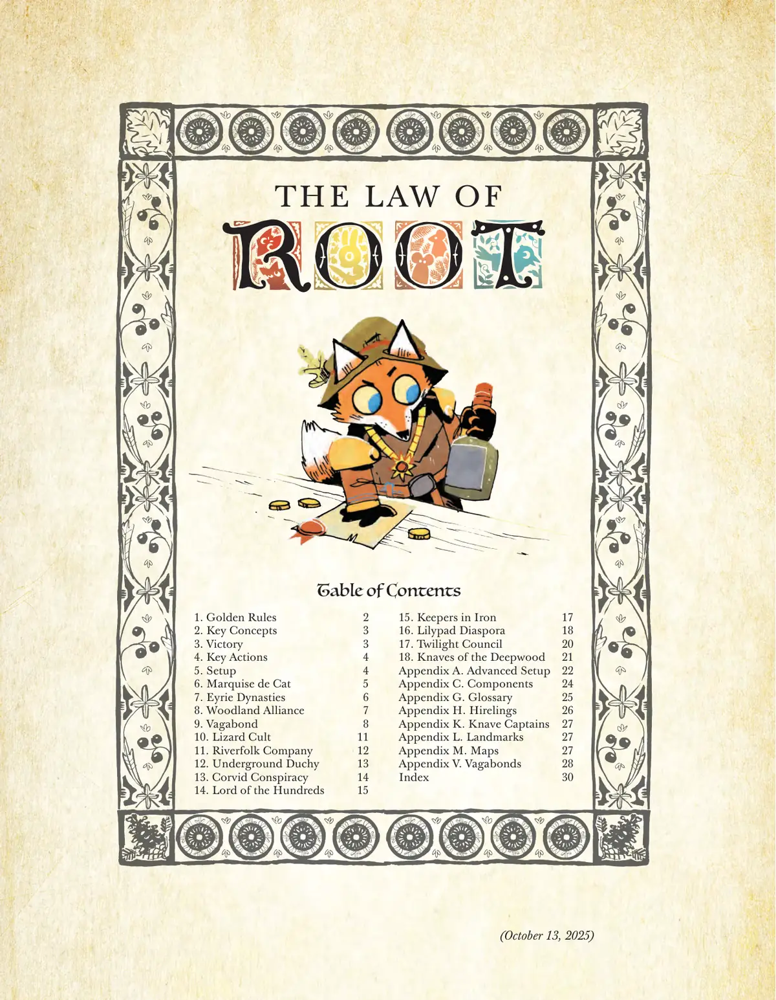
📝 第 1 页 AI 机翻对照（点击展开）
法典
（2025年10月13日）
目录
- 黄金法则
- 核心概念
- 胜利
- 核心行动
- 设置
- 猫侯爵
- 鹰王朝
- 森林联盟
- 流浪者
- 蜥蜴教
- 河流民公司
- 地下公国
- 鸦阴谋
- 百领主
- 铁卫
- 睡莲流亡者
- 黄昏议会
- 深林恶棍
附录 A. 高级设置 22
附录 C. 组件
附录 G. 术语表
附录 H. 雇佣兵
附录 K. 恶棍船长
附录 L. 地标
附录 M. 地图
附录 V. 流浪者
索引
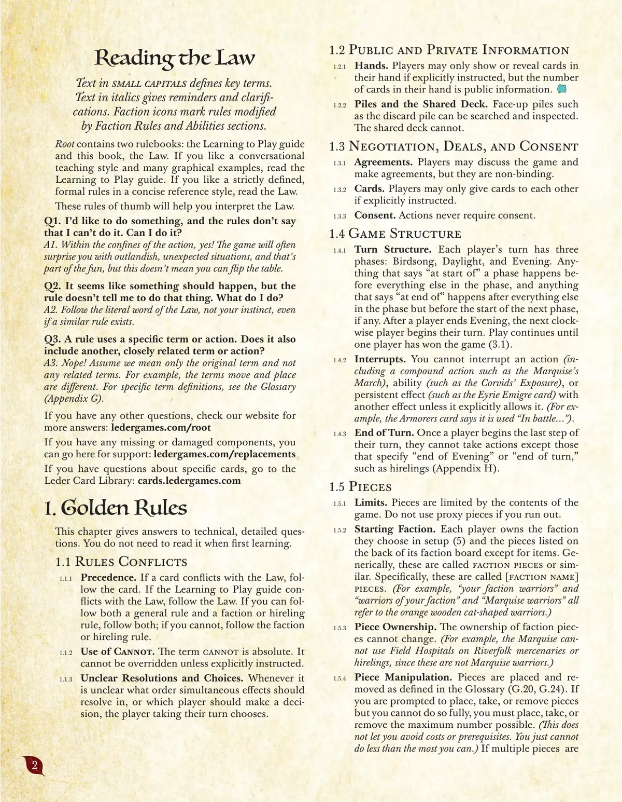
📝 第 2 页 AI 机翻对照（点击展开）
阅读规则
小写大写文本定义关键术语。
斜体文本提供提醒和澄清。
派系图标标记由"派系规则和能力"章节修改的规则。
《Root》包含两本规则书：新手指南和本书《规则》。如果你喜欢对话式的教学风格和大量图形示例，请阅读新手指南。如果你喜欢严格定义的、简洁参考风格的正式规则，请阅读《规则》。
这些经验法则将帮助你解读《规则》。
Q1. 我想做某件事，但规则没有说我不可以做。我能做吗？
A1. 在行动范围内，是的！游戏经常会让你遇到离奇、意外的情况，这也是乐趣的一部分，但这并不意味着你可以掀桌子。
Q2. 似乎应该发生某件事，但规则没有告诉我要做那件事。我该怎么办？
A2. 遵循《规则》的字面意思，而不是你的直觉，即使存在类似的规则。
Q3. 一条规则使用了特定术语或行动。它是否也包括另一个密切相关的术语或行动？
A3. 不！我们只指原始术语，不包括任何相关术语。例如，"移动"和"放置"是不同的术语。关于特定术语的定义，请参见术语表（附录G）。
如果您有任何其他问题，请访问我们的网站获取更多答案：ledergames.com/root
如果您有任何缺失或损坏的组件，可以在此处获取支持：ledergames.com/replacements
如果您有关于特定卡牌的问题，请访问Leder卡牌库：cards.ledergames.com
1. 黄金法则
本章回答技术性、详细的问题。初次学习时无需阅读。
1.1 规则冲突
1.1.1 优先级。如果卡牌与《规则》冲突，遵循卡牌。如果新手指南与《规则》冲突，遵循《规则》。如果你可以同时遵循一般规则和派系或雇佣规则，则两者都遵循；如果不能，则遵循派系或雇佣规则。
1.1.2 "不能"的使用。"不能"一词是绝对的。除非有明确指示，否则不能被覆盖。
1.1.3 不明确的解决和选择。每当不清楚同时效应应该以什么顺序解决，或者哪个玩家应该做出决定时，由正在行动的玩家选择。
1.2 公开和私人信息
1.2.1 手牌。玩家只有在被明确指示时才能展示或揭示手牌中的卡牌，但他们手牌中的卡牌数量是公开信息。○
1.2.2 牌堆和共享牌库。如弃牌堆这样的明置牌堆可以被搜索和检查。共享牌库则不能。
1.3 谈判、交易和同意
1.3.1 协议。玩家可以讨论游戏并
1.3 玩家互动
1.3.1 可以达成协议，但这些协议不具有约束力。
1.3.2 卡牌。只有在明确指示的情况下，玩家之间才能互相给予卡牌。
1.3.3 同意。行动从不要求获得同意。
1.4 游戏结构
1.4.1 回合结构。每个玩家的回合有三个阶段：晨曲、日光和黄昏。任何"在阶段开始时"发生的事情都优先于该阶段内的其他一切，而任何"在阶段结束时"的事情则在该阶段内所有其他事情之后但在下一阶段开始之前发生（如果有）。当一个玩家结束黄昏阶段后，下一个顺时针方向的玩家开始他们的回合。游戏继续进行，直到有玩家赢得游戏（3.1）。
1.4.2 中断。你不能用一个效果中断另一个行动（包括复合行动，如侯爵的进军）、能力（如乌鸦的暴露）或持续效果（如鹰隼流亡者卡牌），除非该效果明确允许这样做。（例如，盔甲匠卡牌说明它在"战斗中..."使用）。
1.4.3 回合结束。一旦玩家开始他们回合的最后一步，他们就不能再执行行动，除非这些行动明确指定为"黄昏结束"或"回合结束"，例如雇佣兵（附录H）。
1.5 棋子
1.5.1 限制。棋子的数量受游戏内容限制。如果棋子用完，不要使用替代棋子。
1.5.2 初始派系。每个玩家拥有他们在设置（5）时选择的派系及其派系版图背面列出的棋子（物品除外）。通常，这些被称为派系棋子或类似名称。具体来说，这些被称为[派系名称]棋子。（例如，"你的派系战士"、"你派系的战士"和"侯爵战士"都指橙色木制猫形战士。）
1.5.3 棋子所有权。派系棋子的所有权不能改变。（例如，侯爵不能在河族雇佣兵或雇佣兵上使用野战医院，因为这些不是侯爵战士。）
1.5.4 棋子操作。棋子的放置和移除按照术语表（G.20，G.24）中的定义进行。如果你被要求放置、拿取或移除棋子但不能完全做到，你必须放置、拿取或移除可能的最大数量。（这并不意味着你可以避免成本或先决条件。你只是不能少于你能做的最多数量。）如果有多个棋子
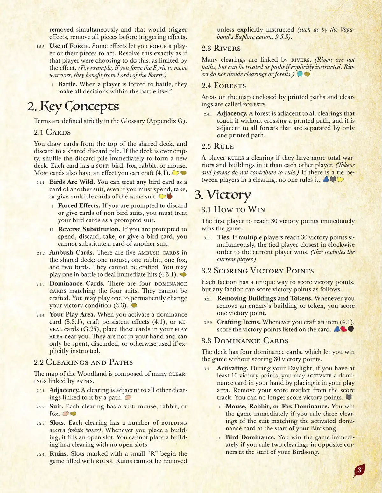
📝 第 3 页 AI 机翻对照（点击展开）
除非有明确指示（例如流浪者（Vagabond）的探索行动，9.5.3）。
2.3 河流
许多空地通过河流相连。（河流不是路径，但在有明确指示时可视为路径。河流不分割空地或森林。）
2.4 森林
地图上由印刷路径和空地包围的区域称为森林。
2.4.1 相邻性。森林与所有不穿过印刷路径而接触它的空地相邻，并且与所有仅被一条印刷路径隔开的森林相邻。
2.5 统治
如果一个玩家在某个空地中的战士和建筑总数多于其他每个玩家，则该玩家统治该空地。（指示物和棋子不贡献统治力。）如果在某个空地中有玩家平局，则无人统治该空地。
- 胜利
3.1 如何获胜
第一个达到30胜利点的玩家立即赢得游戏。
3.1.1 平局。如果多个玩家同时达到30胜利点，则与当前玩家顺时针方向最接近的平局玩家获胜。（这包括当前玩家。）
3.2 获得胜利点
每个派系都有独特的获得胜利点的方式，但任何派系都可以通过以下方式获得胜利点。
3.2.1 移除建筑和指示物。每当移除敌人的建筑或指示物时，你获得1个胜利点。
3.2.2 制作物品。每当制作一个物品（4.1）时，获得卡牌上列出的胜利点。
3.3 优势卡
牌库中有四张优势卡，它们让你无需达到30胜利点即可赢得游戏。
3.3.1 激活。在你的白天阶段，如果你至少有10个胜利点，你可以将手牌中的一张优势卡放置在你的游戏区域来激活它。从分数轨道上移除你的分数标记。你不能再获得胜利点。
I 鼠、兔或狐优势。在你的鸟鸣阶段开始时，如果你统治了三张与已激活优势卡花色匹配的空地，你立即赢得游戏。
II 鸟优势。在你的鸟鸣阶段开始时，如果你统治了对角角落中的两个空地，你立即赢得游戏。
1.5.5 使用武力。一些效果可以强制玩家或其棋子行动。严格按照该玩家选择执行此行动的方式解决，受效果限制。（例如，如果你强制鹰族移动战士，他们可以从森林领主中受益。）
I 战斗。当一个玩家被强制战斗时，他们在战斗本身内做出所有决定。
- 核心概念
术语严格在术语表（附录G）中定义。
2.1 卡牌
你从共享牌库的顶部摸牌，
弃到共享的弃牌堆。如果牌库 ever emp
ty，立即洗混弃牌堆以形成新的
牌库。每张卡牌都有一个花色：鸟、狐狸、兔子或老鼠。
大多数卡牌还有一个你可以制作的效果（4.1）。Lf
2.1.1 鸟牌是万能牌。你可以将任何鸟牌当作另一花色的牌，即使你必须花费、拿取或给予多张相同花色的牌。Lb
I 强制效果。如果你被要求弃牌或给予非鸟花色的牌，你必须将你的鸟牌当作被要求的花色。
II 反向替换。如果你被要求花费、弃牌、拿取或给予一张鸟牌，你不能用另一花色的牌替代。
2.1.2 埋伏卡牌。共享牌库中有五张埋伏卡牌：一张老鼠、一张兔子、一张狐狸和两张鸟牌。它们不能被制作。你可以在战斗中打出一张以造成即时伤害（4.3.1）。f
2.1.3 优势卡牌。有四张与四种花色对应的优势卡牌。它们不能被制作。你可以打出一张来永久改变你的胜利条件（3.3）。F
2.1.4 你的游戏区域。当你激活一张优势卡牌（3.3.1）、制作持久效果（4.1）或揭示卡牌（G.25）时，将这些卡牌放在你附近的游戏区域。它们不在你的手牌中，只有在被明确指示时才能被花费、弃牌或以其他方式使用。
2.2 空地与路径
森林的地图由许多通过路径连接的空地组成。
2.2.1 相邻性。一个空地与所有通过路径与其连接的其他空地相邻。D
2.2.2 花色。每个空地都有一个花色：老鼠、兔子或狐狸。DF
2.2.3 插槽。每个空地都有一定数量的建筑插槽（白色方框）。每当你放置一个建筑，它会填满一个开放的插槽。你不能在没有开放插槽的空地中放置建筑。
2.2.4 废墟。标记有小"R"的插槽在游戏开始时已填满废墟。废墟不能被移除
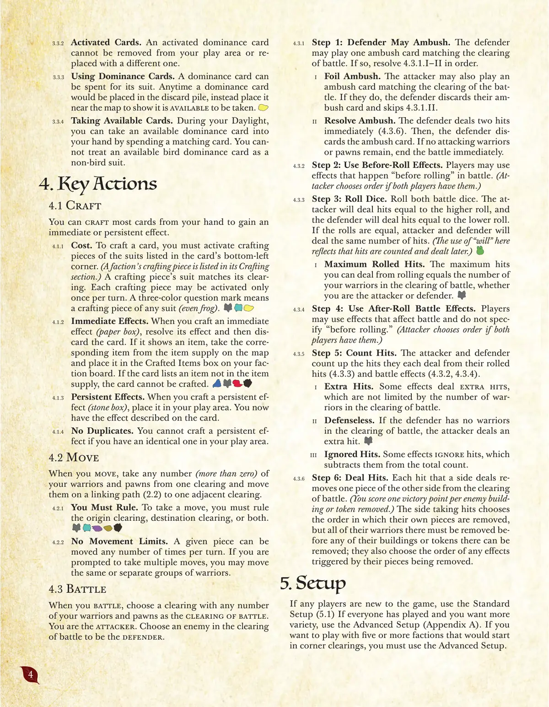
📝 第 4 页 AI 机翻对照（点击展开）
4.3.1 第1步：防御方可埋伏。防御方可以打出一张与战斗空地相匹配的埋伏卡。如果这样做，按顺序执行4.3.1.I–II。
I 破解埋伏。攻击方也可以打出一张与战斗空地相匹配的埋伏卡。如果他们这样做，防御方弃置其埋伏卡并跳过4.3.1.II。
II 执行埋伏。防御方立即造成两次打击（4.3.6）。然后，防御方弃置埋伏卡。如果没有攻击性战士或棋子剩余，立即结束战斗。
4.3.2 第2步：使用投掷前效果。玩家可以使用在"投掷前"发生的效果。（如果双方玩家都有此类效果，由攻击方选择顺序。）
4.3.3 第3步：投掷骰子。投掷两个战斗骰子。攻击方将造成等于较高点数的打击，防御方将造成等于较低点数的打击。如果点数相同，攻击方和防御方将造成相同数量的打击。（此处使用"将"表示打击稍后会被计算和造成。）
I 投掷造成的最大打击。无论你是攻击方还是防御方，通过投掷能造成的最大打击数量等于你在战斗空地中的战士数量。V
4.3.4 第4步：使用投掷后战斗效果。玩家可以使用影响战斗且未指定"投掷前"的效果。（如果双方玩家都有此类效果，由攻击方选择顺序。）
4.3.5 第5步：计算打击。攻击方和防御方分别计算他们从投掷打击（4.3.3）和战斗效果（4.3.2、4.3.4）中造成的打击总数。
I 额外打击。某些效果会造成额外打击，这些打击不受战斗空地中战士数量的限制。
II 无防御状态。如果防御方在战斗空地中没有战士，攻击方造成一次额外打击。V
III 被忽略的打击。某些效果会忽略打击，这些打击会从总数中减去。
4.3.6 第6步：造成打击。一方造成的每次打击会从战斗空地中移除对方的一个棋子。（每移除一个敌方建筑或指示物，你获得一个胜利点。）承受打击的一方选择移除自己棋子的顺序，但他们必须先移除那里的所有战士，然后才能移除那里的任何建筑或指示物；他们还选择由其棋子移除触发的任何效果的顺序。
5 设置
如果有任何玩家是新手，请使用标准设置（5.1）。如果所有人都玩过并且你想要更多变化，请使用高级设置（附录A）。如果你想玩五个或更多起始于角落空地的阵营，你必须使用高级设置。
3.3.2 已激活的卡牌。已激活的统治卡牌不能从你的游戏区域移除或被其他卡牌替换。
3.3.3 使用优势卡。一张优势卡可以
为其花色而使用。任何时候当一张优势卡
本应被放入弃牌堆时，改为将其放在地图旁以显示它可供获取。L
3.3.4 获取可用卡。在你的白天阶段，
你可以通过花费一张匹配的卡牌来获取一张可用的优势卡到手牌。你不能将可用的鸟类优势卡视为非鸟类花色。
- 关键行动
4.1 制作
你可以制作大多数手牌卡牌以获得即时或持久效果。
4.1.1 费用。要制作一张卡牌，你必须激活卡牌左下角所列花色的制作组件。（一个派系的制作组件列在其制作部分。）制作组件的花色与其林地相匹配。每个制作组件每回合只能激活一次。一个三色问号表示任何花色的制作组件（即使是青蛙）。VOL
4.1.2 即时效果。当你制作即时效果（纸盒）时，执行其效果然后弃置该卡牌。如果它显示一个物品，从地图上的物品供应区获取相应物品并将其放置在你的派系版图的已制作物品框中。如果卡牌列出的物品不在物品供应区，则该卡牌无法制作。EVHs
4.1.3 持久效果。当你制作持久效果（石盒）时，将其放置在你的游戏区域。你现在拥有了卡牌上描述的效果。
4.1.4 无重复。如果你在游戏区域中已有相同的持久效果，则不能制作它。
4.2 移动
当你移动时，从一片林地中移动任意数量（多于零）的你的战士和棋子，通过连接路径(2.2)移动到一片相邻的林地。
4.2.1 你必须统治。要进行一次移动，你必须控制起始林地、目标林地或两者。VOCFS
4.2.2 无移动限制。一个棋子每回合可以移动任意次数。如果你被要求进行多次移动，你可以移动相同或不同的战士小组。
4.3 战斗
当你战斗时，选择一片包含任意数量你的战士和棋子的林地作为战斗林地。你是攻击者。选择战斗林地中的一名敌人作为防御者。
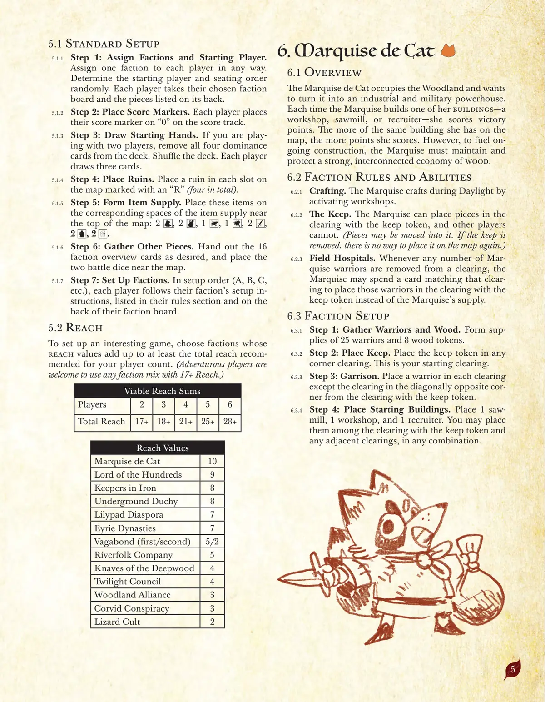
📝 第 5 页 AI 机翻对照（点击展开）
- 猫侯爵 M
6.1 概述
猫侯爵占据林地，并希望将其转变为工业和军事强国。每当猫侯爵建造她的其中一座建筑——工坊、锯木厂或招募站——她都会获得胜利点。她在地图上拥有的相同建筑越多，她获得的分数就越多。然而，为了持续的建设，猫侯爵必须维持和保护一个强大、相互关联的木材经济。
6.2 派系规则和能力
6.2.1 制作。猫侯爵在白天通过激活工坊进行制作。
6.2.2 城堡。猫侯爵可以在带有城堡指示物的空地上放置棋子，其他玩家则不能。（棋子可以移动进去。如果城堡被移除，则无法再将其放置在地图上。）
6.2.3 野战医院。每当任意数量的猫侯爵战士从空地被移除时，猫侯爵可以花费一张与该空地匹配的卡牌，将这些战士放置在带有城堡指示物的空地中，而不是猫侯爵的供应区。
6.3 派系设置
6.3.1 第1步：收集战士和木材。形成25个战士和8个木材指示物的供应。
6.3.2 第2步：放置城堡。将城堡指示物放置在任何角落的空地中。这是你的起始空地。
6.3.3 第3步：驻军。在每个空地中放置一个战士，除了与城堡指示物空地对角线相对的角落的空地。
6.3.4 第4步：放置起始建筑。放置1个锯木厂、1个工坊和1个招募站。你可以将它们放置在带有城堡指示物的空地和任何相邻的空地中，以任何组合方式。
5.1 标准设置
5.1.1 第1步：分配派系和起始玩家。以任何方式为每个玩家分配一个派系。随机确定起始玩家和座位顺序。每个玩家拿取他们选择的派系版图和版图背面列出的棋子。
5.1.2 第2步：放置分数标记。每个玩家将他们的分数标记放在分数轨道的"0"上。
5.1.3 第3步：抽取起始手牌。如果你进行的是两人游戏，从牌库中移除所有四张优势牌。洗牌。每个玩家抽取三张牌。
5.1.4 第4步：放置废墟。在地图上标记有"R"的每个槽位放置一个废墟（总共四个）。
5.1.5 第5步：形成物品供应。将这些物品放置在地图顶部附近的物品供应区的相应空间上：2个M，2个B，1个C，1个H，2个S，2个T，2个X。
5.1.6 第6步：收集其他棋子。按需分发16张派系概览卡，并将两个战斗骰子放在地图附近。
5.1.7 第7步：设置派系。按照设置顺序（A、B、C等），每个玩家按照他们派系设置说明进行设置，这些说明列在他们的规则部分和版图上。
5.2 势力范围 (Reach)
为了设置一场有趣的游戏，选择那些势力范围值总和至少达到为你的玩家数量推荐的总势力范围的阵营。（欢迎大胆的玩家使用势力范围总和为17+的任何阵营组合。）
可行的势力范围总和
| 玩家 | 总势力范围 |
|------|------------|
| 17+ | |
| 18+ | |
| 21+ | |
| 25+ | |
| 28+ | |
势力范围值
| 阵营 | 势力范围值 |
|------|------------|
| Marquise de Cat (猫侯爵) | 5/2 |
| Lord of the Hundreds (百领主) | |
| Keepers in Iron (钢铁守护者) | |
| Underground Duchy (地下公国) | |
| Lilypad Diaspora (睡莲流亡者) | |
| Eyrie Dynasties (鹰王朝) | |
| Vagabond (流浪者/第一/第二) | |
| Riverfolk Company (河民公司) | |
| Knaves of the Deepwood (深林恶棍) | |
| Twilight Council (暮光议会) | |
| Woodland Alliance (林地联盟) | |
| Corvid Conspiracy (鸦鸟阴谋) | |
| Lizard Cult (蜥蜴教团) | |
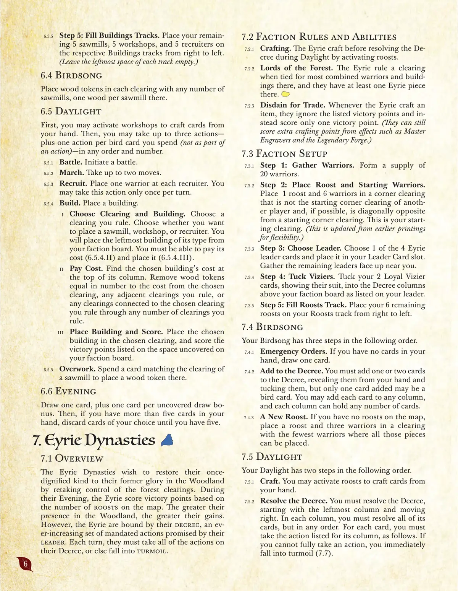
📝 第 6 页 AI 机翻对照（点击展开）
7.2 派系规则与能力
7.2.1 制作
鹰族在白天通过激活鸟巢来执行决议前进行制作。
7.2.2 森林之主
当鹰族在某个空地中战士和建筑的总数并列最多，并且至少有一个鹰族棋子在该空地时，他们统治该空地。L
7.2.3 蔑视贸易
每当鹰族制作一个物品时，他们忽略列出的胜利点数，而只获得一个胜利点。（他们仍然可以从诸如"大师雕刻师"和"传奇锻造厂"等效果中获得额外的制作分数。）
7.3 派系设置
7.3.1 第一步：收集战士
准备20个战士的供应。
7.3.2 第二步：放置鸟巢和起始战士
放置1个鸟巢和6个战士在一个角落空地，该空地不能是其他玩家的起始角落空地，并且如果可能，应与一个起始角落空地对角相对。这是你的起始空地。（这是为了灵活性从早期印刷版更新的。）
7.3.3 第三步：选择领袖
从4张鹰族领袖卡中选择1张，并将其放置在你的领袖卡槽中。将剩余的领袖卡正面朝上放在你附近。
7.3.4 第四步：收纳大臣
将你的2张忠诚大臣卡收纳到你的领袖卡上列出的派系版图上方的决议列中，显示它们的 suit。
7.3.5 第五步：填充鸟巢轨道
将你剩余的6个鸟巢从右到左放在你的鸟巢轨道上。
7.4 鸟鸣
你的鸟鸣按以下顺序有三个步骤。
7.4.1 紧急命令
如果你的手牌中没有卡牌，摸一张牌。
7.4.2 添加到决议
你必须将一张或两张卡牌添加到决议中，从你的手牌中揭示它们并收纳它们，但添加的卡牌中只有一张可以是鸟牌。你可以将每张卡牌添加到任意列，每列可以容纳任意数量的卡牌。
7.4.3 新鸟巢
如果你的地图上没有鸟巢，在一个战士数量最少的空地放置一个鸟巢和三个战士，前提是所有这些棋子都可以被放置在那里。
7.5 白天
你的白天按以下顺序有两个步骤。
7.5.1 制作
你可以激活鸟巢来制作你手牌中的卡牌。
7.5.2 执行决议
你必须执行决议，从最左边的列开始，向右移动。在每一列中，你必须执行其所有卡牌，但顺序任意。对于每张卡牌，你必须执行其列所列出的行动，如下所示。如果你无法完全执行一个行动，你将立即陷入动荡（7.7）。
6.3.5 第五步：填充建筑轨道
将你剩余的5个锯木厂、5个工坊和5个招募员从右到左放在相应的建筑轨道上。（每条轨道的最左边一格留空。）
6.4 鸟鸣
在每个有任何数量木制指示物的空地放置木制指示物。
6.5 白天
首先，你可以激活工坊来用手牌制作卡牌。然后，你可以执行最多三个行动——每花费一张鸟牌额外获得一个行动（不作为行动的一部分）——以任意顺序和数量执行。
6.5.1 战斗。发起战斗。
6.5.2 行军。执行最多两次移动。
6.5.3 招募。在每个招募点放置一个战士。你每个回合只能执行此行动一次。
6.5.4 建设。放置一个建筑。
I 选择林地和建筑。选择一个你统治的林地。选择你要放置的锯木厂、工坊或招募点。你将放置你派系版图上该类型最左边的建筑。你必须能够支付其成本(6.5.4.II)并放置它(6.5.4.III)。
II 支付成本。在所选建筑列的顶部找到其成本。从所选林地、你统治的任何相邻林地或通过你统治的任何数量林地与你所选林地相连的林地中，移除等于该成本的木制指示物。
III 放置建筑和计分。将所选建筑放置在所选林地中，并计分你派系版图上揭开的空间上列出的胜利点。
6.5.5 过度工作。花费一张与锯木厂所在林地匹配的卡牌，在那里放置一个木制指示物。
6.6 傍晚
抽一张牌，加上每张揭开的抽牌奖励牌各抽一张。然后，如果你的手牌超过五张，选择弃牌直到你有五张。
- 鹰王朝扩展
7.1 概述
鹰王朝希望通过重新夺回森林林地的控制权，来恢复他们在林地中曾经高贵的种族的昔日荣光。在他们的傍晚回合，鹰王朝根据地图上巢穴的数量计分。他们在林地中的存在感越强，收获就越大。然而，鹰王朝受他们的法令约束，这是由他们的领袖承诺的不断增多的强制性行动集合。每个回合，他们必须执行其法令上的所有行动，否则就会陷入混乱。
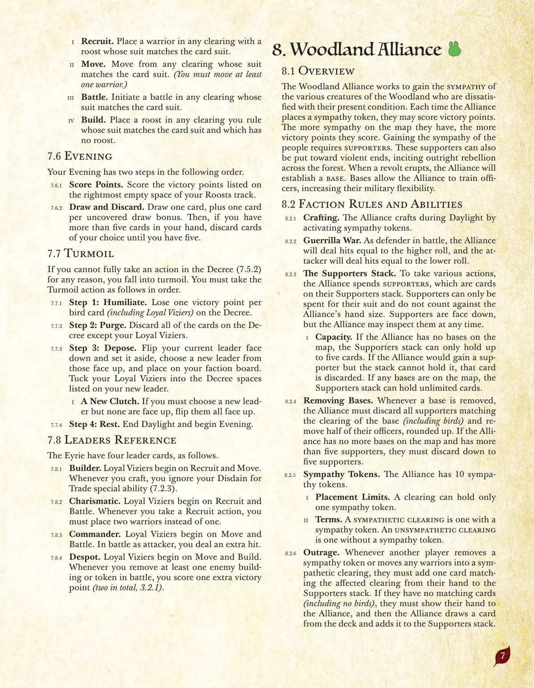
📝 第 7 页 AI 机翻对照（点击展开）
- 森林联盟 A
8.1 概述
森林联盟致力于获得林地中各种生物的同情，这些生物对它们目前的状况不满。每当联盟放置一个同情指示物，他们可以获得胜利点。地图上的同情越多，他们获得的胜利点就越多。获得人民的同情需要支持者。这些支持者也可以用于暴力目的，在整个森林中煽动公开叛乱。当叛乱爆发时，联盟将建立一个基地。基地允许联盟训练军官，提高他们的军事灵活性。
8.2 派系规则和能力
8.2.1 制作。联盟在白天通过激活同情指示物进行制作。
8.2.2 游击战。作为战斗中的防御方，联盟造成的伤害等于较高的骰子点数，而攻击方造成的伤害等于较低的骰子点数。
8.2.3 支持者牌堆。为了执行各种行动，联盟需要花费支持者，这些支持者是位于他们支持者牌堆上的卡牌。支持者只能用于它们的花色，且不计入联盟的手牌上限。支持者牌面朝下，但联盟可以随时查看它们。
I 容量。如果联盟在地图上没有基地，支持者牌堆最多只能容纳五张卡牌。如果联盟将获得一张支持者但牌堆无法容纳，则该卡牌被弃置。如果地图上有任何基地，支持者牌堆可以容纳无限张卡牌。
8.2.4 移除基地。每当一个基地被移除，联盟必须弃置所有与基地所在空地（包括鸟类）相匹配的支持者，并移除他们一半的军官（向上取整）。如果联盟在地图上不再有基地且拥有超过五张支持者，他们必须弃置至五张支持者。
8.2.5 同情指示物。联盟有10个同情指示物。
I 放置限制。一个空地只能放置一个同情指示物。
II 术语。有同情指示物的空地称为同情空地；没有同情指示物的空地称为非同情空地。
8.2.6 愤怒。每当其他玩家移除一个同情指示物或将任何战士移动到同情空地时，他们必须从手牌中添加一张与受影响空地相匹配的卡牌到支持者牌堆。如果他们没有匹配的卡牌（包括没有鸟类），他们必须向联盟展示手牌，然后联盟从牌库摸一张牌并添加到支持者牌堆。
I 招募。在任何有与卡牌花色匹配的鸟巢的空地中放置一个战士。
II 移动。从任何与卡牌花色匹配的空地移动。（你必须移动至少一个战士。）
III 战斗。在任何花色匹配卡牌花色的空地上发起战斗。
IV 建设。在你统治的任何花色匹配卡牌花色且没有鸟巢的空地上放置一个鸟巢。
7.6 傍晚
你的傍晚按以下顺序有两个步骤。
7.6.1 计分。在你的鸟巢轨道上最右侧的空格上列出胜利点数。
7.6.2 摸牌与弃牌。摸一张牌，加上每张未覆盖的摸牌奖励一张牌。然后，如果你的手牌超过五张，选择弃牌直到你有五张。
7.7 动乱
如果由于任何原因你无法完全执行法令（7.5.2）中的行动，你将陷入动乱。你必须按顺序执行以下动乱行动。
7.7.1 第一步：羞辱。每张在法令上的鸟类卡牌（包括忠诚的维齐尔）失去一个胜利点。
7.7.2 第二步：清除。弃掉法令上除你的忠诚的维齐尔外的所有卡牌。
7.7.3 第三步：罢免。将你当前的领导者面朝下放置一旁，从面朝上的领导者中选择一个新的，并放置在你的派系版图上。将你的忠诚的维齐尔插入到新领导者上列出的法令空格中。如果你必须选择一个新的领导者但没有面朝上的，将它们全部翻面。
7.7.4 第四步：休息。结束白天并开始傍晚。
7.8 领导者参考
鹰族有四张领导者卡牌，如下所示。
7.8.1 建造者。忠诚的维齐尔从招募和移动开始。每当你在制作时，忽略你对贸易的蔑视特殊能力（7.2.3）。
7.8.2 魅力领袖。忠诚的维齐尔从招募和战斗开始。每当你在执行招募行动时，必须放置两个战士而不是一个。
7.8.3 指挥官。忠诚的维齐尔从移动和战斗开始。在战斗中作为攻击者时，你造成一次额外打击。
7.8.4 暴君。忠诚的维齐尔从移动和建设开始。每当你在战斗中移除至少一个敌方建筑或指示物时，你获得一个额外胜利点（总共两个，3.2.1）。
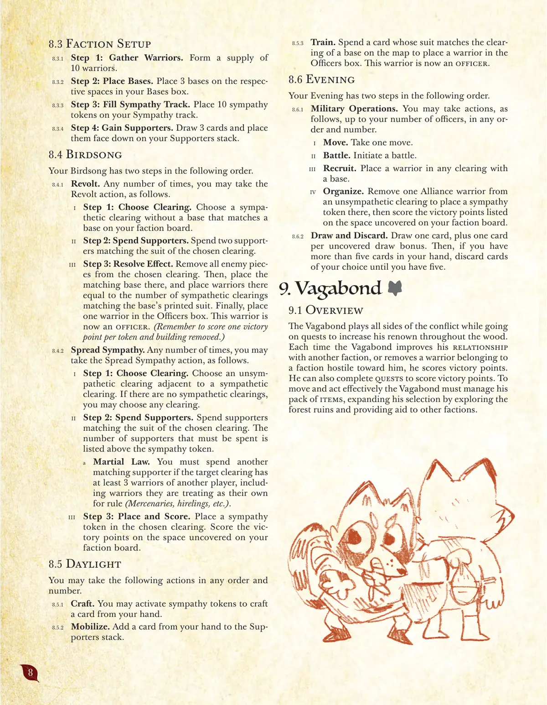
📝 第 8 页 AI 机翻对照（点击展开）
8.5.3 火车。花费一张与地图上某个据点（clearing）花色匹配的卡牌，在军官盒（Officers box）中放置一个战士。这个战士现在是一名军官。
8.6 傍晚（Evening）
你的傍晚（Evening）包含以下两个步骤，按顺序执行。
8.6.1 军事行动（Military Operations）。你可以按以下方式行动，次数不超过你的军官数量，可以任意顺序和次数执行。
I 移动（Move）。执行一次移动。
II 战斗（Battle）。发起一次战斗。
III 招募（Recruit）。在任何有据点（base）的据点（clearing）放置一个战士。
IV 组织（Organize）。从一个不友善的据点（unsympathetic clearing）移除一个联盟战士（Alliance warrior），在那里放置一个同情标记（sympathy token），然后在你派系版图（faction board）上被揭开的区域（space）上标记的胜利点（victory points）计分。
8.6.2 摸牌与弃牌（Draw and Discard）。摸一张牌，加上每张揭开的摸牌奖励（draw bonus）对应一张牌。然后，如果你的手牌（hand）超过五张，选择弃牌直到你有五张。
- 流浪者V（Vagabond V）
9.1 概述（Overview）
流浪者（Vagabond）在冲突中扮演各方角色，同时进行任务以在整个森林中提高他的声望（renown）。每当流浪者改善与其他派系的关系，或移除一个属于敌对派系的战士时，他都会获得胜利点（victory points）。他还可以完成任务来获得胜利点。为了有效移动和行动，流浪者必须管理他的物品包（pack），通过探索森林废墟（forest ruins）并向其他派系提供援助来扩展他的选择。
8.3 派系设置（Faction Setup）
8.3.1 步骤1：收集战士（Gather Warriors）。准备10个战士的供应。
8.3.2 步骤2：放置据点（Place Bases）。在你的据点盒（Bases box）中相应的区域（space）上放置3个据点（bases）。
8.3.3 步骤3：填充同情度轨道（Fill Sympathy Track）。在你的同情度轨道（Sympathy track）上放置10个同情标记（sympathy tokens）。
8.3.4 步骤4：获得支持者（Gain Supporters）。摸3张牌并将它们面朝下放置在你的支持者堆（Supporters stack）上。
8.4 鸟鸣（Birdsong）
你的鸟鸣（Birdsong）包含以下两个步骤，按顺序执行。
8.4.1 反叛（Revolt）。你可以任意次数执行反叛行动，如下所示。
I 步骤1：选择据点（Choose Clearing）。选择一个没有据点（base）且与你的派系版图（faction board）上某个据点（base）花色匹配的友善据点（sympathetic clearing）。
II 步骤2：花费支持者（Spend Supporters）。花费两张与所选据点（clearing）花色匹配的支持者（supporters）。
III 步骤3：解决效果（Resolve Effect）。从所选据点（clearing）移除所有敌方棋子。然后，在那里放置匹配的据点（base），并放置与该据点（base）印刷花色匹配的友善据点（sympathetic clearings）数量相等的战士。最后，在军官盒（Officers box）中放置一个战士。这个战士现在是一名军官。（记住要为每个被移除的标记和建筑计一分胜利点。）
8.4.2 扩散同情（Spread Sympathy）。你可以任意次数执行扩散同情行动，如下所示。
I 步骤1：选择据点（Choose Clearing）。选择一个与友善据点（sympathetic clearing）相邻的不友善据点（unsympathetic clearing）。如果没有友善据点（sympathetic clearings），
II 步骤2：花费支持者。花费与所选林空（clearing）花色匹配的支持者。必须花费的支持者数量在同情标记（sympathy token）上方列出。
a 军事管制（Martial Law）。如果目标林空至少有3名其他玩家的战士（包括他们根据规则视为自己拥有的战士，如雇佣兵（Mercenaries）、临时工（hirelings）等），你必须额外花费一名匹配的支持者。
III 步骤3：放置和计分。在所选林空中放置一个同情标记。在你的派系版图（faction board）上揭开的空间上计分胜利点（victory points）。
8.5 日间（Daylight）
你可以按任意顺序和数量执行以下行动。
8.5.1 制作（Craft）。你可以激活同情标记来制作你手牌中的一张卡牌。
8.5.2 动员（Mobilize）。将你手牌中的一张卡牌添加到支持者堆（Supporters stack）。
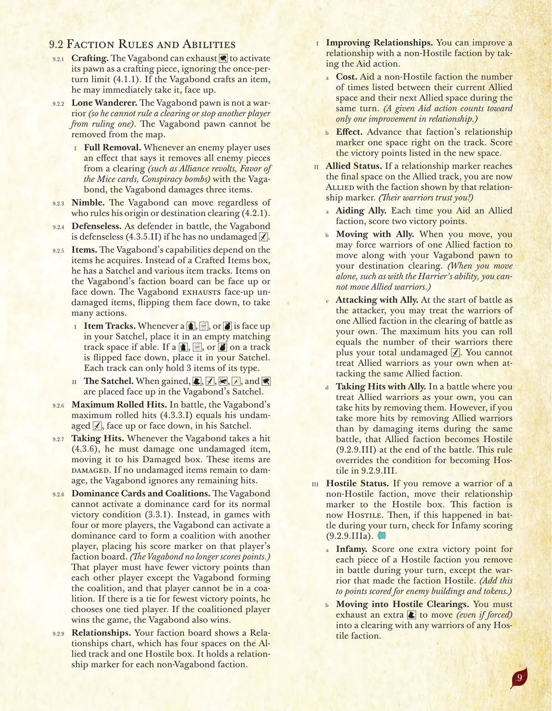
📝 第 9 页 AI 机翻对照（点击展开）
改善关系
你可以通过执行援助行动来改善与非敌对派系的关系。
a. 费用
在同一回合内，援助一个非敌对派系的次数，等于其当前同盟格与下一个同盟格之间列出的次数。（一次援助行动仅计入一次关系改善。）
b. 效果
将该派系的关系指示物在轨道上向右移动一格。获得新格中列出的胜利点。
同盟状态
如果关系指示物到达同盟轨道的最后一格，你即与该关系指示物所示派系结为同盟。（他们的战士信任你！）
a. 援助盟友
每次你援助一个盟友派系，获得两个胜利点。
b. 与盟友一同移动
当你移动时，你可以强制一个盟友派系的战士随你的流浪者棋子一起移动到你的目的地空地。（当你单独移动时，例如使用猎手的能力，你不能移动盟友战士。）
c. 与盟友一同攻击
作为攻击方在战斗开始时，你可以将战斗空地中一个盟友派系的战士视为你自己的。你能掷出的最大命中数等于该处他们的战士数量加上你未受损的S总数。你不能在攻击同一个盟友派系时将其战士视为你自己的。
d. 与盟友一同承受伤害
在将盟友战士视为你自己的战斗中，你可以通过移除他们来承受伤害。然而，如果在同一战斗中，通过移除盟友战士承受的伤害超过了通过损坏物品承受的伤害，该盟友派系将在战斗结束时变为敌对（9.2.9.III）。此规则优先于9.2.9.III中关于变为敌对的条件。
敌对状态
如果你移除了一个非敌对派系的战士，将其关系指示物移至敌对框。该派系现为敌对。然后，如果这发生在你回合的战斗中，检查恶名得分（9.2.9.IIIa）。
a. 恶名
在你回合的战斗中，每移除一个敌对派系的一件物品，获得一个额外胜利点（使该派系变为敌对的那名战士除外）。（将此添加到敌方建筑和指示物的得分中。）
b. 进入敌对空地
你必须额外消耗一个M才能移动（即使是被强制）到有任何敌对派系战士的空地。
9.2 派系规则与能力
9.2.1 制作
流浪者可以消耗H来激活其棋子作为制作棋子，忽略每回合一次的限制（4.1.1）。如果流浪者制作了一件物品，他可以立即将其正面朝上拿取。
9.2.2 孤独的漫游者
流浪者棋子不是战士（因此他不能统治空地或阻止其他玩家）
9.2.3 敏捷。流浪者棋子可以移动，无论谁控制着他的出发地或目的地林地（4.2.1）。
9.2.4 无防御。作为战斗中的防御方，如果流浪者没有未受损的S，他将无防御（4.3.5.II）。
9.2.5 物品。流浪者的能力取决于他获得的物品。他有一个背包和各种物品轨道，而不是一个"精制物品"框。流浪者派系板上的物品可以是正面朝上或正面朝下。流浪者使用正面朝上的未受损物品，将其翻转为正面朝下，来执行许多行动。
I 物品轨道。当你的背包中的T、X或B正面朝上时，如果可能，将其放入一个空的相应轨道格中。如果轨道上的T、X或B被翻转为正面朝下，将其放入你的背包。每个轨道最多只能容纳3个该类型的物品。
II 背包。获得时，M、S、C、F和H被正面朝上地放入流浪者的背包中。
9.2.6 最大掷骰命中数。在战斗中，流浪者的最大掷骰命中数（4.3.3.I）等于他背包中正面朝上或朝下的未受损S的数量。
9.2.7 承受伤害。每当流浪者承受一次伤害（4.3.6），他必须损坏一个未受损的物品，将其移至他的"已损坏"框中。这些物品已损坏。如果没有未受损的物品可损坏，流浪者忽略任何剩余的伤害。
9.2.8 优势牌和联盟。流浪者不能为其常规胜利条件激活优势牌（3.3.1）。相反，在四人或更多玩家的游戏中，流浪者可以激活一张优势牌以与另一名玩家组成联盟，将其分数标记放在该玩家的派系板上。（流浪者不再得分。）该玩家的胜利点必须少于除组成联盟的流浪者外的每个其他玩家，且该玩家不能处于联盟中。如果有最少胜利点的平局，他选择一个平局的玩家。如果联盟玩家赢得游戏，流浪者也获胜。
9.2.9 关系。你的派系板显示一个关系图表，该图表在"盟友"轨道上有四个格，一个"敌对"框。它为每个非流浪者派系持有一个关系标记。
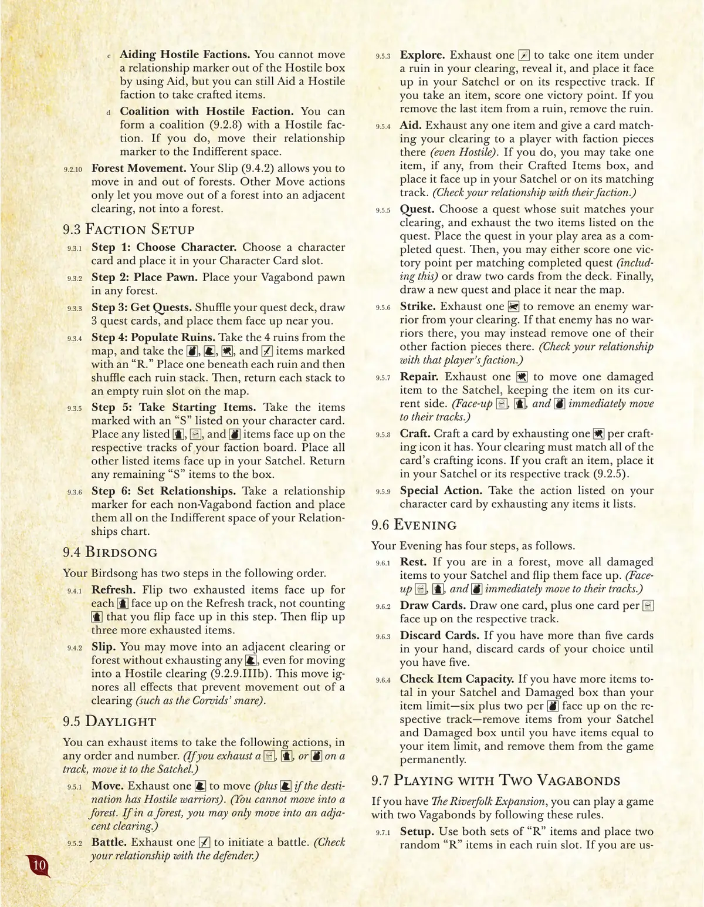
📝 第 10 页 AI 机翻对照（点击展开）
9.5.3 探索。消耗一个F，拿走你清理区废墟下的一件物品，揭示它，并将其正面朝上放入你的背包或相应的轨道上。如果你拿走了一件物品，获得一个胜利点。如果你从废墟中拿走了最后一件物品，移除该废墟。
9.5.4 援助。消耗任意一件物品，并将一张与你清理区匹配的卡牌给予在该处有派系棋子的玩家（即使是敌对派系）。如果你这样做，你可以从他们的制作物品盒中拿取一件物品（如果有），并将其正面朝上放入你的背包或相应的轨道上。（检查你与他们派系的关系。）
9.5.5 任务。选择一个与你清理区花色匹配的任务，并消耗任务上列出的两件物品。将该任务放入你的游戏区域作为已完成的任务。然后，你可以选择每匹配一个已完成的任务（包括这个）获得一个胜利点，或者从牌库中摸两张牌。最后，摸一张新任务并将其放在地图附近。
9.5.6 攻击。消耗一个C，从你的清理区移除一个敌方战士。如果那个敌人在那里没有战士，你可以移除他们在那里的其他派系棋子之一。（检查与该玩家派系的关系。）
9.5.7 修理。消耗一个H，将一件受损物品移入背包，保持物品的当前面朝上。（正面朝上的X、T和B立即移至它们的轨道上。）
9.5.8 制作。通过消耗每个制作图标一个H来制作一张卡牌。你的清理区必须匹配卡牌的所有制作图标。如果你制作了一件物品，将其放入你的背包或相应的轨道上（9.2.5）。
9.5.9 特殊行动。通过消耗角色卡上列出的任意物品，执行角色卡上列出的行动。
9.6 傍晚
你的傍晚有四个步骤，如下所示。
9.6.1 休息。如果你在森林中，将所有受损物品移入你的背包并将其翻转为正面朝上。（正面朝上的X、T和B立即移至它们的轨道上。）
9.6.2 摸牌。摸一张牌，加上每张在相应轨道上正面朝上的X摸一张牌。
9.6.3 弃牌。如果你的手牌中有超过五张牌，选择弃牌直到你有五张。
9.6.4 检查物品容量。如果你的背包和受损盒中的物品总数超过了你的物品限制——加上每张在相应轨道上正面朝上的B增加两个限制——从你的背包和受损盒中移除物品直到你的物品数量等于你的物品限制，并将它们永久移出游戏。
9.7 使用两个流浪者进行游戏
如果你有《河族》扩展，你可以按照以下规则使用两个流浪者进行游戏。
9.7.1 设置。使用两套"R"物品，并在每个废墟槽位中放置两个随机的"R"物品。如果你使用的是"河族"扩展，将两个"河族"起始板放在地图上，每个玩家一个，并按照9.7.2设置关系标记。
9.7.2 关系标记设置。每个玩家将他们的关系标记放在中立框中。每个玩家将他们的关系标记放在中立框中。
c 援助敌对派系。你不能将关系标记从敌对框中移出
9.2.9 IIIb. 通过援助使用援助，但你仍然可以援助敌对派系以获取制作物品。
d. 与敌对派系结盟。你可以与敌对派系结盟（9.2.8）。如果你这样做，将他们的关系指示物移至中立区域。
9.2.10 森林移动。你的滑行（9.4.2）允许你进出森林。其他移动行动只允许你从森林移动到相邻的空地，不能进入森林。
9.3 派系设置
9.3.1 步骤1：选择角色。选择一张角色卡并将其放置在你的角色卡槽中。
9.3.2 步骤2：放置棋子。将你的流浪者棋子放置在任何森林中。
9.3.3 步骤3：获取任务。洗混你的任务牌库，抽取3张任务牌，并将其正面朝上放置在你附近。
9.3.4 步骤4：填充废墟。从版图上取走4个废墟，并标记有"R"的B、M、H和S物品。在每个废墟下放置一个，然后洗混每个废墟堆。接着，将每个堆放回版图上的空废墟槽中。
9.3.5 步骤5：获取起始物品。取走你角色卡上列出的标记有"S"的物品。将列出的T、X和B物品正面朝上放置在你的派系版图的相应轨道上。将所有其他列出的物品正面朝上放置在你的背包中。将剩余的"S"物品放回盒中。
9.3.6 步骤6：设置关系。为每个非流浪者派系取一个关系指示物，并将它们全部放置在你的关系图表的中立区域上。
9.4 鸟鸣
你的鸟鸣按以下顺序有两个步骤。
9.4.1 恢复。根据恢复轨道上正面朝上的T数量，翻转两张已耗尽的物品（不包括你在本步骤翻转的T）。然后再翻转三张已耗尽的物品。
9.4.2 滑行。你可以移动到相邻的空地或森林，而不需要耗尽任何M，即使移动到敌对空地（9.2.9.IIIb）。此移动忽略所有阻止离开空地的效果（例如乌鸦的陷阱）。
9.5 白天
你可以耗尽物品来执行以下行动，按任意顺序和数量执行。（如果你耗尽轨道上的X、T或B，将其移至背包。）
9.5.1 移动。耗尽一个M来移动（如果目的地有敌对战士，则额外耗尽M）。（你不能进入森林。如果在森林中，你只能移动到相邻的空地。）
9.5.2 战斗。耗尽一个S来发起战斗。（检查你与防御者的关系。）
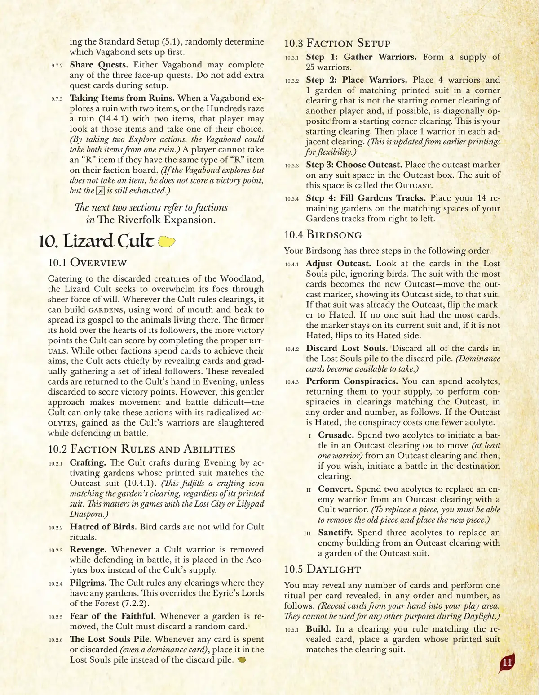
📝 第 11 页 AI 机翻对照（点击展开）
10.3 派系设置
10.3.1 第1步：收集战士。组成一个包含25个战士的供应。
10.3.2 第2步：放置战士。在角落空地上放置4个战士和1个与印刷花色匹配的花园，该角落空地不能是其他玩家的起始角落空地，并且如果可能，应与一个起始角落空地对角相对。这是你的起始空地。然后在每个相邻的空地上放置1个战士。（这是为了灵活性从早期印刷版本更新的。）
10.3.3 第3步：选择弃儿。将弃儿标记放在弃儿盒中的任意花色格上。这个格的花色被称为弃儿。
10.3.4 第4步：填充花园轨道。将你剩余的14个花园从右到左放置在你的花园轨道的对应格上。
10.4 鸟鸣
你的鸟鸣按以下顺序有三个步骤。
10.4.1 调整弃儿。查看迷失灵魂堆中的卡牌，忽略鸟类。卡牌最多的花色成为新的弃儿——将显示弃儿面的弃儿标记移动到该花色。如果该花色已经是弃儿，将标记翻为憎恨面。如果没有花色拥有最多卡牌，标记停留在当前花色，并且如果不是憎恨面，则翻到其憎恨面。
10.4.2 弃置迷失灵魂。将迷失灵魂堆中的所有卡牌弃置到弃牌堆。（优势卡牌变得可以获取。）
10.4.3 执行阴谋。你可以花费侍祭，将其返回到你的供应中，以在匹配弃儿的空地中执行阴谋，数量和顺序任意，如下所示。如果弃儿是憎恨面，阴谋花费的侍祭减少一个。
I. 远征。花费两个侍祭在弃儿空地中发起战斗，或从弃儿空地移动（至少一个战士）然后，如果你愿意，在目标空地中发起战斗。
II. 改宗。花费两个侍祭用邪教战士替换弃儿空地中的一个敌方战士。（要替换一个棋子，你必须能够移除旧棋子并放置新棋子。）
III. 圣化。花费三个侍祭用弃儿花色的花园替换弃儿空地中的一个敌方建筑。
10.5 白昼
你可以揭示任意数量的卡牌，并为每张揭示的卡牌执行一个仪式，数量和顺序任意，如下所示。（将手牌中的卡牌揭示到你的游戏区域。它们在白昼期间不能用于其他任何目的。）
10.5.1 建设。在你统治的、与揭示卡牌匹配的空地中，放置一个印刷花色与空地花色匹配的花园。
设置期间的任务卡。
9.7.3 从废墟中获取物品。当一个流浪者探索一个有两件物品的废墟，或者百人团摧毁一个有两件物品的废墟(14.4.1)时，该玩家可以查看这些物品并选择其中一件。（通过执行两次探索行动，流浪者可以从一个废墟中获取两件物品。）如果玩家在其派系版图上拥有同类型的"R"物品，则不能获取该"R"物品。（如果流浪者探索但不获取物品，他不会获得胜利点，但该行动仍被耗尽。）
接下来的两个章节涉及《河族扩展》中的派系。
- 蜥蜴教派 L
10.1 概述
蜥蜴教派迎合林地中被遗弃的生物，试图通过纯粹的意志力压倒其对手。无论教派统治哪些空地，它都可以建造花园，利用口传和喙向居住在那里的动物传播其福音。教派对追随者心灵的掌控越牢固，通过完成适当的仪式获得的胜利点就越多。虽然其他派系花费卡牌来实现目标，但教派主要通过揭示卡牌并逐渐收集一套理想的追随者来行动。这些揭示的卡牌在傍晚时返回教派的手牌，除非被弃牌以获得胜利点。然而，这种温和的方式使得移动和战斗变得困难——教派只能通过其激进的信徒执行这些行动，这些信徒是在教派战士在防御战斗中被屠杀时获得的。
10.2 派系规则和能力
10.2.1 制作。教派在傍晚通过激活其印刷花色与流放者花色(10.4.1)相匹配的花园来进行制作。（这满足了与花园空地相匹配的制作图标，无论其印刷花色如何。这在包含失落之城或睡莲散居的游戏中很重要。）
10.2.2 对鸟类的憎恨。鸟牌在教派仪式中不是万能牌。
10.2.3 复仇。每当教派战士在防御战斗中被移除时，它被放置在信徒盒中，而不是教派的供应区。
10.2.4 朝圣者。教派统治任何他们拥有花园的空地。这覆盖了鹰堡的森林领主(7.2.2)。
10.2.5 对信徒的恐惧。每当一个花园被移除，教派必须弃掉一张随机卡牌。
10.2.6 失魂者堆。每当任何卡牌被使用或弃置（即使是统治卡牌），将其放置在失魂者堆中，而不是弃牌堆。F
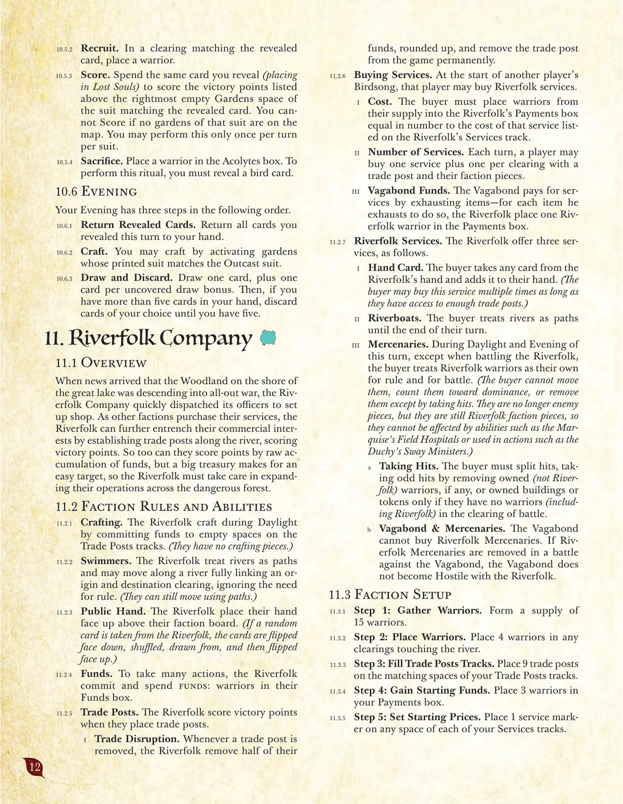
📝 第 12 页 AI 机翻对照（点击展开）
10.5.2 招募。在一张与揭示卡牌匹配的空地上，放置一个战士。
10.5.3 计分。花费你揭示的同一张卡牌（放入迷失灵魂堆）来计分，分数为与揭示卡牌花色匹配的、最右侧空置的花园空间上方列出的胜利点数。如果地图上没有该花色的花园，则无法计分。每回合每花色你只能执行此操作一次。
10.5.4 献祭。在门徒盒子中放置一个战士。要执行这个仪式，你必须揭示一张鸟类卡牌。
10.6 傍晚
你的傍晚按以下顺序有三个步骤。
10.6.1 归还揭示卡牌。将你本回合揭示的所有卡牌归还到手牌。
10.6.2 制作。你可以通过激活印刷花色与流亡者花色匹配的花园来进行制作。
10.6.3 摸牌与弃牌。摸一张牌，加上每张 uncovered 摸牌奖励摸一张牌。然后，如果你的手牌超过五张，选择弃牌直到你有五张。
- 河流民族公司 O
11.1 概述
当得知大湖岸边的林地陷入全面战争的消息传来时，河流民族公司迅速派遣其官员设立据点。随着其他派系购买他们的服务，河流民族可以通过沿河建立贸易站来进一步巩固其商业利益，获得胜利点。他们也可以通过资金的原始积累来得分，但庞大的金库容易成为目标，因此河流民族在扩展其穿越危险森林的运营时必须小心谨慎。
11.2 派系规则与能力
11.2.1 制作。河流民族在白天通过将资金投入到贸易站轨道的空格中来制作。（他们没有制作棋子。）
11.2.2 游泳者。河流民族将河流视为路径，可以沿着完全连接起点和终点空地的河流移动，忽略规则要求。（他们仍然可以使用路径移动。）
11.2.3 公开手牌。河流民族将其手牌面朝上放在派系板上方。（如果随机抽取河流民族的一张牌，这些牌会被面朝下翻转、洗牌、从中抽取，然后面朝上放回。）
11.2.4 资金。为了执行许多行动，河流民族需要投入和花费资金：他们资金盒子中的战士。
11.2.5 贸易站。河流民族放置贸易站时获得胜利点。
I 贸易中断。每当一个贸易站被移除，河流民族移除其一半的资金（向上取整），并将该贸易站永久移出游戏。
11.2.6 购买服务。在另一个玩家的鸟鸣开始时，该玩家可以购买河流民族的服务。
I 费用。购买者必须将其供应中的战士放入河流民族的付款盒子。
11.2.6 服务购买规则
I 购买服务的费用等于在河族服务轨道上列出的该服务的费用。
II 服务数量。每个回合，玩家可以购买一项服务，加上每个有贸易哨站的空地及其派系棋子的数量。
III 流浪者资金。流浪者通过 exhausting 物品来支付服务费用——每 exhausting 一个物品来支付，河族就在支付盒中放置一个河族战士。
11.2.7 河族服务。河族提供三项服务，如下所示。
I 手牌卡牌。购买者从河族的手牌中拿取任意一张卡牌并加入自己的手牌。（只要玩家能够接触到足够的贸易哨站，他们可以多次购买此项服务。）
II 河船。购买者在自己的回合结束前，将河流视为路径。
III 雇佣兵。在本回合的白昼和傍晚时段，在与河族战斗时除外，购买者将河族战士视为自己的棋子，用于规则和战斗。（购买者不能移动它们，不能将它们计入优势，也不能通过承受伤害来移除它们。它们不再是敌方棋子，但它们仍然是河族派系棋子，因此不能受到如侯爵的战地医院之类的能力影响，也不能用于如公国的影响大臣之类的行动中。）
a 承受伤害。购买者必须分配伤害，通过移除自己拥有的（非河族的）战士来承受奇数点伤害，如果有的话；或者只有在战斗空地中没有战士（包括河族战士）时，才移除自己拥有的建筑或指示物。
b 流浪者与雇佣兵。流浪者不能购买河族雇佣兵。如果在与流浪者的战斗中移除了河族雇佣兵，流浪者不会与河族变为敌对状态。
11.3 派系设置
11.3.1 步骤1：收集战士。准备15个战士的供应。
11.3.2 步骤2：放置战士。将4个战士放置在任何与河流接壤的空地中。
11.3.3 步骤3：填充贸易哨站轨道。在你的贸易哨站轨道的对应空间上放置9个贸易哨站。
11.3.4 步骤4：获得起始资金。在你的支付盒中放置3个战士。
11.3.5 步骤5：设置起始价格。在你的每项服务轨道的任意空间上放置1个服务标记。
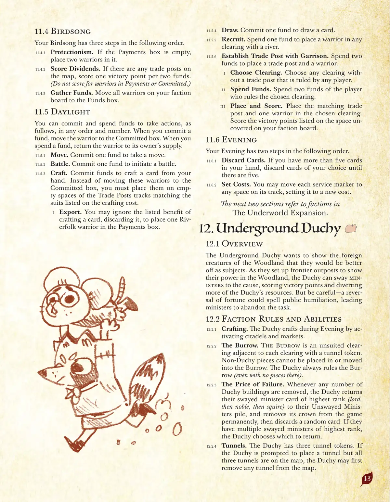
📝 第 13 页 AI 机翻对照（点击展开）
11.5.4 摸牌。投入一个资金来摸一张牌。
11.5.5 招募。花费一个资金，在任何有河流的空地上放置一个战士。
11.5.6 建立带驻军的贸易站。花费两个资金，放置一个贸易站和一个战士。
I 选择空地。选择任何没有贸易站且被任何玩家统治的空地。
II 花费资金。花费统治所选空地的玩家的两个资金。
III 放置和计分。在所选空地放置对应的贸易站和一个战士。在你的派系版图上揭开的空间上列出的胜利点数。
11.6 傍晚
你的傍晚按以下顺序有两个步骤。
11.6.1 弃牌。如果你的手牌超过五张，选择弃牌直到剩下五张。
11.6.2 设置费用。你可以将每个服务标记移动到其轨道上的任何空间，将其设置为新费用。
接下来的两个章节涉及《地下世界》扩展中的派系。
- 地下公国 D
12.1 概述
地下公国想要向林地中的外来生物展示，他们作为臣民会过得更好。当他们建立前线哨所以在林地展示自己的力量时，公国可以说服大臣们支持这项事业，获得胜利点并转移更多公国的资源。但要小心——命运的逆转可能导致公开羞辱，导致大臣们放弃任务。
12.2 派系规则和能力
12.2.1 制作。公国在傍晚通过激活城堡和市场来进行制作。
12.2.2 地下通道。地下通道是每个有隧道标记的空地相邻的无色空地。非公国的棋子不能被放置或移动到地下通道。公国总是统治地下通道（即使那里没有棋子）。
12.2.3 失败的代价。每当有任何数量的公国建筑被移除，公国将其已说服的大臣牌中等级最高的（领主、贵族、然后是侍从）返回到他们未说服的大臣堆，并将其王冠永久性地从游戏中移除，然后随机弃掉一张牌。如果他们有多个等级最高的已说服大臣，公国选择返回哪一个。
12.2.4 隧道。公国有三个隧道标记。如果公国被要求放置隧道但所有三个隧道都在版图上，公国可以先从版图上移除任何隧道。
11.4 鸟鸣
你的鸟鸣按以下顺序有三个步骤。
11.4.1 保护主义。如果付款框为空，在其中放置两个战士。
11.4.2 计算股息。如果版图上有任何贸易站，每两个资金计一个胜利点。（不为付款框或已投入框中的战士计分。）
11.4.3 收集资金。将你派系版图上的所有战士移动到资金框。
11.5 白昼
你可以按任意顺序和数量投入并花费资金来执行行动，如下所示。当你投入一笔资金时，将战士移至已投入区域。当你花费一笔资金时，将战士归还给其拥有者的储备库。
11.5.1 移动。投入一笔资金来执行一次移动。
11.5.2 战斗。投入一笔资金来发起一场战斗。
11.5.3 制作。投入资金来制作你手牌中的一张卡牌。不要将这些战士移至已投入区域，你必须将它们放置在贸易站轨道上与制作费用上列出的花色相匹配的空格上。
I 出口。你可以忽略制作卡牌的列明收益，弃掉这张卡牌，从而在付款区域中放置一名河族战士。
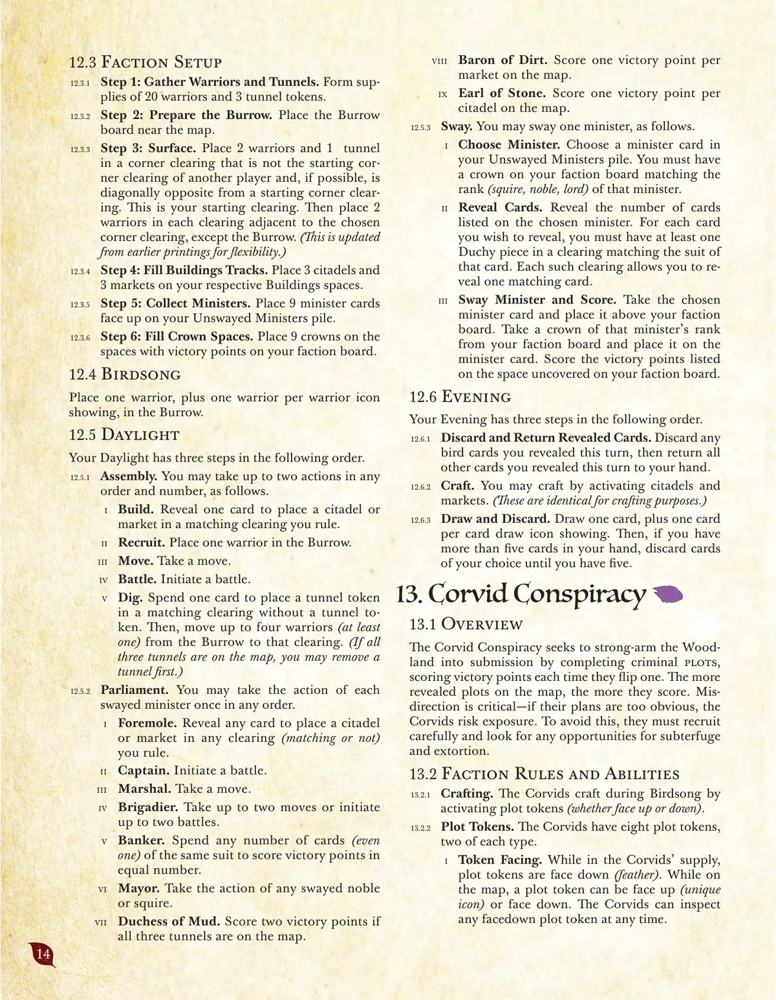
📝 第 14 页 AI 机翻对照（点击展开）
12.3 派系设置
12.3.1 步骤1：收集战士和隧道。准备20个战士和3个隧道指示物。
12.3.2 步骤2：准备洞穴。将洞穴版图放在地图附近。
12.3.3 步骤3：地表。在另一个玩家的起始角空地之外的角落空地放置2个战士和1个隧道，并且如果可能，与起始角空地对角相对。这是你的起始空地。然后在所选的角空地相邻的每个空地（洞穴除外）放置2个战士。（这是为了灵活性从早期印刷版更新的。）
12.3.4 步骤4：填充建筑轨道。在你的建筑空间上各放置3个城堡和3个市场。
12.3.5 步骤5：收集大臣。将9张大臣牌面朝上放在你未动摇的大臣堆上。
12.3.6 步骤6：填充王冠空间。在你的派系版图上有胜利点的空间上放置9个王冠。
12.4 鸟鸣
在洞穴中放置一个战士，加上显示的每个战士图标对应一个战士。
12.5 白天
你的白天按以下顺序有三个步骤。
12.5.1 集会。你可以按任意顺序和数量执行最多两个行动，如下所示。
I 建设。翻开一张牌，在你统治的匹配空地中放置一个城堡或市场。
II 招募。在洞穴中放置一个战士。
III 移动。执行一次移动。
IV 战斗。发起一场战斗。
V 挖掘。花费一张牌，在没有隧道指示物的匹配空地中放置一个隧道指示物。然后，将最多四个战士（至少一个）从洞穴移动到该空地。（如果三个隧道都在地图上，你可以先移除一个隧道。）
12.5.2 议会。你可以按任意顺序执行每位被动摇的大臣的行动一次。
I 前鼹鼠。翻开任意一张牌，在你统治的任何空地（匹配或不匹配）中放置一个城堡或市场。
II 上尉。发起一场战斗。
III 元帅。执行一次移动。
IV 准将。执行最多两次移动或发起最多两次战斗。
V 银行家。花费任意数量的相同花色的牌（甚至一张）来获得相等数量的胜利点。
VI 市长。执行任意一位被动摇的贵族或侍从的行动。
VII 泥土女公爵。如果三个隧道都在地图上，获得两个胜利点。
VIII 泥土男爵。每地图上的一个市场获得一个胜利点。
IX 石头伯爵。每地图上的一个城堡获得一个胜利点。
12.5.3 动摇。你可以动摇一位大臣，如下所示。
I 选择大臣。从你未动摇的大臣堆中选择一张大臣牌。你必须在你派系版图上有与该大臣等级（侍从、贵族、领主）匹配的王冠。
II 翻开牌。翻开所选大臣上列出的数量的牌。对于每张牌
如果你想揭示，你必须至少有一个在空地上的公爵棋子与该卡牌的花色匹配。每个这样的空地允许你揭示一张匹配的卡牌。
III 宣布大臣并计分。拿走所选的大臣卡牌并将其放置在你的派系版图上方。从你的派系版图上取走该大臣等级的王冠并将其放置在大臣卡牌上。计分你派系版图上被揭开的空间上列出的胜利点数。
12.6 傍晚
你的傍晚按以下顺序有三个步骤。
12.6.1 弃牌并归还已揭示的卡牌。弃置你本轮揭示的所有鸟类卡牌，然后将你本轮揭示的所有其他卡牌归还到手牌。
12.6.2 制作。你可以通过激活城堡和市场来进行制作。（就制作目的而言，这两者是相同的。）
12.6.3 摸牌并弃牌。摸一张牌，加上每张显示摸牌图标的牌各摸一张。然后，如果你的手牌超过五张，选择弃牌直到你有五张。
- 鸦群阴谋 C
13.1 概述
鸦群阴谋试图通过完成犯罪阴谋来强行压制林地，每次翻转一个阴谋都会计分。地图上揭示的阴谋越多，他们获得的分数就越多。误导至关重要——如果他们的计划过于明显，鸦群就有暴露的风险。为了避免这种情况，他们必须谨慎招募，并寻找任何欺骗和敲诈的机会。
13.2 派系规则与能力
13.2.1 制作。鸦群在鸟鸣阶段通过激活阴谋指示物（无论正面朝上还是朝下）进行制作。
13.2.2 阴谋指示物。鸦群有八个阴谋指示物，每种类型各两个。
I 指示物朝向。在鸦群的供应区中时，阴谋指示物是背面朝上（羽毛）。在地图上时，阴谋指示物可以是正面朝上（独特图标）或背面朝上。鸦群可以随时检查任何背面朝上的阴谋指示物。
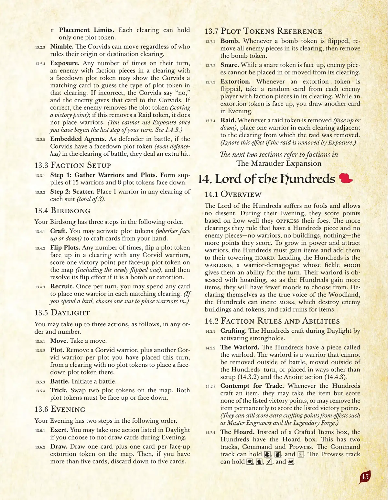
📝 第 15 页 AI 机翻对照（点击展开）
II 放置限制。每个空地只能放置一个地块指示物。
13.2.3 敏捷。乌鸦可以移动，无论它们的起始或目标空地由谁控制。
13.2.4 暴露。在自己的回合中，敌人可以在有空地块指示物的空地中拥有派系棋子时，任意次数地向乌鸦展示一张匹配的卡片来猜测该空地中地块指示物的类型。如果错误，乌鸦说"不"，敌人将该卡片交给乌鸦。如果正确，敌人移除地块指示物（获得一个胜利点）；如果移除了突袭指示物，则不放置战士。（一旦你开始回合的最后一步，就不能再使用暴露。参见1.4.3。）
13.2.5 嵌入特工。作为战斗中的防御方，如果乌鸦在战斗空地中有面朝下的地块指示物（即使没有防御能力），他们会造成一次额外打击。
13.3 派系设置
13.3.1 第一步：收集战士和地块。准备15个战士和8个面朝下的地块指示物。
13.3.2 第二步：分散。在每个花色的任意空地中放置1个战士（总共3个）。
13.4 鸟鸣
你的鸟鸣按以下顺序有三个步骤。
13.4.1 制作。你可以激活地块指示物（无论面朝上还是面朝下）来从手牌中制作卡片。
13.4.2 翻转地块。任意次数，在有乌鸦战士的空地将地块指示物翻面，每张地图上面朝上的地块指示物（包括新翻面的那张）获得一个胜利点，然后如果是炸弹或勒索地块，解决其翻转效果。
13.4.3 招募。每回合一次，你可以花费任意卡片在每个匹配的空地中放置一个战士。（如果你花费一张鸟牌，选择一个花色来放置战士。）
13.5 白昼
你可以按任意顺序和数量执行最多三个行动，如下所示。
13.5.1 移动。执行一次移动。
13.5.2 地块。从一个没有地块指示物的空地移除一个乌鸦战士，加上你本回合已放置的地块数量对应的额外乌鸦战士，在该空地放置一个面朝下的地块指示物。
13.5.3 战斗。发起一场战斗。
13.5.4 墩。交换地图上的两个地块指示物。两个地块指示物必须同时面朝上或面朝下。
13.6 黄昏
你的黄昏按以下顺序有两个步骤。
13.6.1 耗力。如果你选择在黄昏期间不摸牌，你可以执行一个白昼列表中的行动。
13.6.2 摸牌。摸一张牌加上地图上每张面朝上的勒索指示物对应一张牌。然后，如果你的手牌超过五张，弃牌至五张。
13.7 地块指示物参考
13.7.1 炸弹。每当炸弹指示物被翻面，移除其空地中的所有敌方棋子，然后移除炸弹指示物。
13.7.2 陷阱。当陷阱指示物面朝上时，敌方棋子不能被放置到其空地中或从其空地中移出。
13.7.3 勒索。每当勒索指示物被翻转时，从每个在其空地中有派系棋子的敌方玩家处随机抽取一张卡牌。当勒索指示物正面朝上时，你在傍晚阶段额外摸一张牌。
13.7.4 袭击。每当袭击指示物被移除（正面朝上或朝下）时，在每个与袭击被移除的空地相邻的空地中放置一个战士。（如果袭击是通过曝光被移除的，则忽略此效果。）
接下来的两个章节涉及掠夺者扩展中的派系
- 百领主 H
14.1 概述
百领主不容忍愚人，不允许异议。在他们的傍晚阶段，他们根据压迫敌人的程度来计分。他们统治的空地中，有百领主棋子且没有敌方棋子——没有战士，没有建筑，什么都没有——越多，他们获得的分数就越多。为了增强实力并吸引战士，百领主必须获得物品并将它们添加到他们堆积如山的宝库中。领导百领主的是军事首领，一个战士式煽动家，其善变的心情使他们能够获得回合能力。他们的军事首领痴迷于囤积，因此随着百领主获得更多物品，他们可选择的心情会减少。百领主宣称自己是森林的真正声音，他们可以煽动暴民，摧毁敌方建筑和指示物，并袭击废墟以获取物品。
14.2 派系规则和能力
14.2.1 制作。百领主在白天通过激活要塞来制作物品。
14.2.2 军事首领。百领主有一个称为军事首领的棋子。军事首领是一个战士，不能在战斗外被移除，在百领主回合外被移动，或以除设置（14.3.2）和涂油行动（14.4.3）之外的方式放置。
14.2.3 蔑视贸易。每当百领主制作一件物品时，他们可以拿走该物品但不计列出的胜利点，或者永久移除该物品以计列出的胜利点。（他们仍然可以从诸如大师雕刻家和传奇锻造厂等效果中获得额外的制作分数。）
14.2.4 宝库。百领主没有制作物品框，而是有宝库框。宝库有两个轨道：指挥和勇猛。指挥轨道可以容纳M、B和X。勇猛轨道可以容纳H、T、S和C。
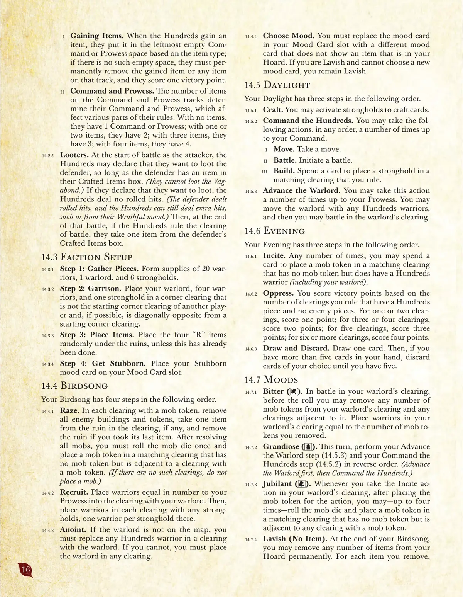
📝 第 16 页 AI 机翻对照（点击展开）
14.4.4 选择情绪。你必须用一张不同的情绪卡替换你情绪卡槽中的情绪卡，这张卡不能显示你宝库中已有的物品。如果你是奢侈型且无法选择新的情绪卡，你保持奢侈型。
14.5 白昼
你的白昼按以下顺序有三个步骤。
14.5.1 制作。你可以激活要塞来制作卡牌。
14.5.2 指挥百人。你可以按任意顺序执行以下行动，次数不超过你的指挥值。
I 移动。执行一次移动。
II 战斗。发起一次战斗。
III 建设。花费一张卡牌，在你统治的匹配空地上放置一个要塞。
14.5.3 推进军阀。你可以执行此行动，次数不超过你的勇武值。你可以用任何百人战士移动军阀，然后你可以在军阀所在的空地战斗。
14.6 傍晚
你的傍晚按以下顺序有三个步骤。
14.6.1 煽动。你可以任意次数，花费一张卡牌，在一个没有暴民标记但有百人战士（包括你的军阀）的匹配空地上放置一个暴民标记。
14.6.2 压迫。根据你统治的空地数量计分，这些空地必须有百人棋子且没有敌方棋子。一个或两个空地，得一分；三个或四个空地，得两分；五个空地，得三分；六个或更多空地，得四分。
14.6.3 摸牌与弃牌。摸一张牌。然后，如果你的手牌超过五张，选择弃牌直到你有五张。
14.7 情绪
14.7.1 苦涩(H)。在你的军阀所在空地的战斗中，在投骰前，你可以移除你军阀所在空地及其相邻空地上的任意数量的暴民标记。在你军阀所在空地放置数量等于你移除的暴民标记的战士。
14.7.2 宏大(T)。本回合，你以相反顺序执行推进军阀步骤(14.5.3)和指挥百人步骤(14.5.2)。（先推进军阀，然后指挥百人。）
14.7.3 欢欣(M)。每当你在军阀所在空地执行煽动行动时，在为该行动放置暴民标记后，你可以最多四次——投掷暴民骰子，并在一个没有暴民标记但与任何有暴民标记的空地相邻的匹配空地上放置一个暴民标记。
14.7.4 奢侈(无物品)。在你的晨歌结束时，你可以永久移除你宝库中的任意数量的物品。对于你移除的每件物品，
I 获得物品。当百人获得一件物品时，他们根据物品类型将其放入最左边的空的指挥或勇武格；如果没有这样的空格，他们必须永久移除获得的物品或任何物品
在该轨道上，他们获得一个胜利点。
II 指挥与勇猛。指挥与勇猛轨道上的项目数量决定了他们的指挥与勇猛值，这会影响其规则的各个部分。没有项目时，他们拥有1点指挥或勇猛；有一或两个项目时，拥有2点；有三个项目时，拥有3点；有四个项目时，拥有4点。
14.2.5 掠夺者。作为攻击方在战斗开始时，只要防御方在其"制作物品"盒中有物品，百人队可以声明他们想要掠夺防御方。（他们不能掠夺流浪者。）如果他们声明要掠夺，百人队不会造成任何掷骰命中的伤害。（防御方会造成掷骰命中的伤害，而百人队仍然可以造成额外伤害，例如来自其愤怒情绪。）然后，在该战斗结束时，如果百人队控制战斗空地，他们会从防御方的"制作物品"盒中拿取一件物品。
14.3 派系设置
14.3.1 步骤1：收集棋子。准备20名战士、1名军阀和6座堡垒的供应。
14.3.2 步骤2：驻防。将你的军阀、四名战士和一座堡垒放置在一个角落空地，该空地不能是其他玩家的起始角落空地，并且如果可能，应与一个起始角落空地对角相对。
14.3.3 步骤3：放置物品。将四个"R"物品随机放置在废墟下，除非这已经完成。
14.3.4 步骤4：获得固执。将你的固执情绪卡放置在你的情绪卡槽位。
14.4 鸟鸣阶段
你的鸟鸣阶段按以下顺序有四个步骤。
14.4.1 焚毁。在每个有暴徒标记的空地中，移除所有敌方建筑和标记，从该空地的废墟中拿取一件物品（如果有），并且如果你拿取了废墟的最后一件物品，则移除该废墟。在解决所有暴徒后，你必须掷一次暴徒骰子，并将一个暴徒标记放置在一个没有暴徒标记但与有暴徒标记的空地相邻的匹配空地。（如果没有这样的空地，不要放置暴徒。）
14.4.2 招募。将数量等于你勇猛值的战士放置在你的军阀所在的空地中。然后，在每个有任何堡垒的空地中各放置一名战士。
14.4.3 任命。如果军阀不在版图上，你必须用一个军阀替换空地中的任何百人队战士。如果你不能这样做，你必须将军阀放置在任何空地中。
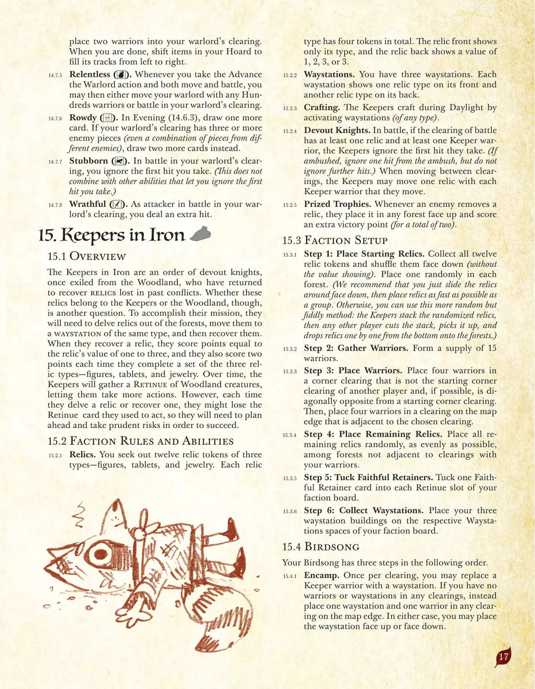
📝 第 17 页 AI 机翻对照（点击展开）
每种类型共有四个指示物。遗物正面只显示其类型，遗物背面显示1、2、3或3的数值。
15.2.2 中转站。你有三个中转站。每个中转站正面显示一种遗物类型，背面显示另一种遗物类型。
15.2.3 制作。守护者在白天通过激活中转站（任何类型）进行制作。
15.2.4 虔诚骑士。在战斗中，如果战斗的空地至少有一个遗物且至少有一个守护者战士，守护者可以忽略他们受到的第一次打击。（如果被伏击，忽略一次伏击伤害，但不忽略后续伤害。）当在空地之间移动时，守护者可以随每个移动的守护者战士移动一个遗物。
15.2.5 珍贵战利品。每当敌人移除一个遗物，他们会将其正面朝上放置在任何森林中，并额外获得一个胜利点（总共两个）。
15.3 派系设置
15.3.1 步骤1：放置起始遗物。收集全部十二个遗物指示物，面朝下洗牌（不显示数值）。在每个森林中随机放置一个。（我们建议你只是将遗物面朝下滑动，然后尽可能快地作为一个整体放置遗物。否则，你可以使用这个更随机但麻烦的方法：守护者将随机化的遗物堆叠，然后任何其他玩家切牌，拿起牌堆，并将遗物一个一个从底部放到森林中。）
15.3.2 步骤2：集结战士。形成一个15个战士的供给。
15.3.3 步骤3：放置战士。在一个角落空地放置四个战士，该空地不是其他玩家的起始角落空地，并且如果可能，与一个起始角落空地对角相对。然后在地图边缘与所选空地相邻的一个空地放置四个战士。
15.3.4 步骤4：放置剩余遗物。尽可能均匀地随机放置所有剩余遗物，在不与有战士的空地相邻的森林中。
15.3.5 步骤5：收纳忠诚随从。将一张忠诚随从卡收纳到你的派系板的每个随从槽中。
15.3.6 步骤6：收集中转站。将你的三个中转站建筑放置在你的派系板的中转站空间上。
15.4 鸟鸣
你的鸟鸣按以下顺序有三个步骤。
15.4.1 扎营。每个空地一次，你可以用一个中转站替换一个守护者战士。如果你在任何空地都没有战士或中转站，则在地图边缘的任何空地放置一个中转站和一个战士。无论哪种情况，你可以将中转站正面朝上或朝下放置。
在你的指挥官空地放置两个战士。
完成后，移动你宝库中的物品，从左到右填满其轨道。
14.7.5 不屈（B）。每当你进行前进行动时
14.7.6 喧闹(X)。在傍晚阶段(14.6.3)，多摸一张牌。如果你的领主所在空地有三个或更多敌方棋子（即使是来自不同敌人的组合），则再多摸两张牌。
14.7.7 顽固(C)。在你的领主所在空地进行战斗时，你忽略你受到的第一次打击。（这不与让你忽略第一次受到打击的其他能力结合使用。）
14.7.8 愤怒(S)。作为你的领主所在空地战斗中的攻击方，你造成一次额外打击。
- 铁之守护者(K)
15.1 概述
铁之守护者是一个虔诚的骑士团，曾被逐出林地，现已归来以寻回过去冲突中丢失的圣物。然而，这些圣物是否属于铁之守护者或林地，则是另一个问题。为了完成他们的使命，他们需要将圣物从森林中发掘出来，将它们移动到同类型的驿站，然后回收它们。当他们回收一件圣物时，他们获得等于圣物价值（1至3分）的分数，并且每当他们完成一套三种类型的圣物——雕像、石板和珠宝时，他们还会获得额外2分。随着时间的推移，铁之守护者将收集到一群林地生物的随从，使他们能够执行更多行动。然而，每次他们发掘或回收一件圣物时，他们可能会失去用来行动的随从卡牌，因此他们需要提前计划并谨慎冒险才能成功。
15.2 派系规则与能力
15.2.1 圣物。你寻找三种类型的十二件圣物指示物：雕像、石板和珠宝。每件圣物
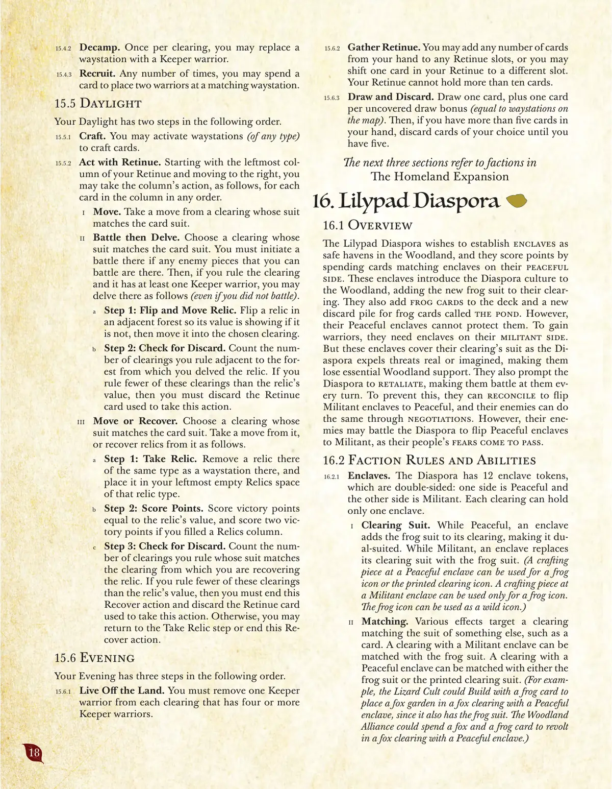
📝 第 18 页 AI 机翻对照（点击展开）
15.6.2 收集随从。你可以将手牌中的任意数量的卡牌添加到任意随从槽位，或者你可以将随从中的一张卡牌移动到不同的槽位。你的随从不能持有超过十张卡牌。
15.6.3 摸牌与弃牌。摸一张牌，加上每张未覆盖的摸牌奖励（等于地图上的驿站数量）摸一张牌。然后，如果你的手牌超过五张，选择弃牌直到你有五张。
接下来的三个章节涉及《故土扩展》中的派系
- 睡莲流亡者 F
16.1 概述
睡莲流亡者希望在林地中建立飞地作为避难所，他们通过花费与飞地匹配的卡牌来获得分数。这些飞地将流亡者文化引入林地，为他们的空地增加了新的青蛙花色。他们还将青蛙卡牌加入牌库，并创建了一个专门用于青蛙卡牌的新弃牌堆，称为池塘。然而，他们的和平飞地无法保护他们。要获得战士，他们需要位于好战侧的飞地。但这些飞地会掩盖他们空地的花色，因为流亡者驱逐真实或想象的威胁，使他们失去林地的重要支持。这也促使流亡者进行报复，使他们每回合都进行战斗。为了防止这种情况，他们可以通过和解将好战飞地翻转为和平飞地，而他们的敌人也可以通过谈判做同样的事情。然而，他们的敌人可以通过战斗将和平飞地翻转为好战飞地，因为人民的恐惧成真。
16.2 派系规则与能力
16.2.1 飞地。流亡者有12个飞地指示物，它们是双面的：一面是和平面，另一面是好战面。每个空地只能容纳一个飞地。
I 空地花色。和平状态下，飞地为其空地增加青蛙花色，使其成为双花色空地。好战状态下，飞地用青蛙花色替换其空地花色。（在和平飞地的工艺棋子可用于青蛙图标或印刷的空地图标。在好战飞地的工艺棋子只能用于青蛙图标。青蛙图标可作为万能图标使用。）
II 匹配。各种效果会针对与某物花色匹配的空地，例如卡牌。有好战飞地的空地可以与青蛙花色匹配。有和平飞地的空地可以与青蛙花色或印刷的空地花色匹配。（例如，蜥蜴教团可以使用青蛙卡牌建造，在带有和平飞地的狐狸空地中放置一个狐狸花园，因为它也有青蛙花色。林地联盟可以花费一张狐狸和一张青蛙卡牌，在带有和平飞地的狐狸空地中起义。）
15.4.3 招募。你可以任意次数，花费一张牌，在匹配的前哨站放置两个战士。
15.5 白天
你的白天按以下顺序有两个步骤。
15.5.1 制作。你可以激活（任何类型的）前哨站来制作卡牌。
15.5.2 随扈行动。从你的随扈最左列开始向右移动，你可以按任意顺序为列中的每张牌执行该列的行动，如下所示：
I 移动。从一个花色匹配卡牌花色的空地中执行一次移动。
II 战斗然后探索。选择一个花色匹配卡牌花色的空地。如果那里有任何你可以战斗的敌方棋子，你必须在那里发起战斗。然后，如果你统治该空地并且它至少有一个守护者战士，你可以按如下方式在那里探索（即使你没有战斗）。
a 第1步：翻转并移动遗物。翻转相邻森林中的一件遗物，如果其数值未显示，则将其翻转显示，然后将其移动到所选空地。
b 第2步：检查弃牌。计算你统治的、与探索遗物的森林相邻的空地数量。如果你统治的这些空地少于遗物的数值，你必须丢弃用于执行此行动的随扈卡牌。
III 移动或恢复。选择一个花色匹配卡牌花色的空地。从中执行一次移动，或按如下方式从中恢复遗物。
a 第1步：获取遗物。移除那里与该处前哨站类型相同的一件遗物，并将其放置在你该类型遗物的最左侧空遗物位。
b 第2步：计分。获得等于遗物数值的胜利点，如果你填满了一列遗物位，则额外获得两个胜利点。
c 第3步：检查弃牌。计算你统治的、与你要恢复遗物的空地花色匹配的空地数量。如果你统治的这些空地少于遗物的数值，你必须结束此恢复行动并丢弃用于执行此行动的随扈卡牌。否则，你可以返回到获取遗物步骤或结束此恢复行动。
15.6 傍晚
你的傍晚按以下顺序有三个步骤。
15.6.1 依靠土地生存。你必须从每个拥有四个或更多守护者战士的空地中移除一个守护者战士。
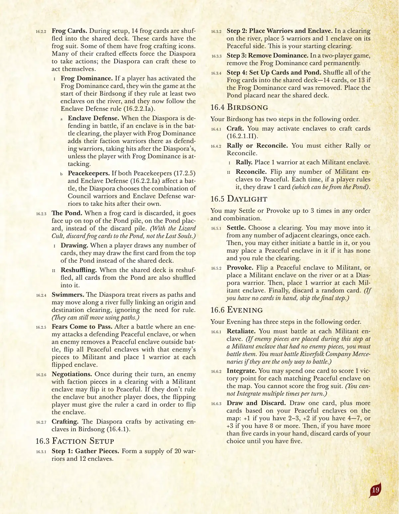
📝 第 19 页 AI 机翻对照（点击展开）
16.3.2 步骤2：放置战士和聚落。在河边的空地上，在其和平面放置5个战士和1个聚落。这是你的起始空地。
16.3.3 步骤3：移除优势。在双人对局中，永久移除青蛙优势卡牌。
16.3.4 步骤4：设置卡牌和池塘。将所有青蛙卡牌洗入共享牌库—14张卡牌，如果移除了青蛙优势卡牌则为13张。将池塘指示牌放在共享牌库附近。
16.4 鸟鸣
你的鸟鸣阶段按以下顺序包含两个步骤。
16.4.1 制作。你可以激活聚落来制作卡牌（16.2.1.II）。
16.4.2 集结或和解。你必须选择集结或和解。
I 集结。在每个好战聚落放置1个战士。
II 和解。翻转任意数量的好战聚落为和平。每次翻转时，如果某玩家控制该聚落，他们摸1张牌（可以从池塘摸）。
16.5 白昼
你可以以任意顺序和组合进行最多3次定居或挑衅行动。
16.5.1 定居。选择一个空地。你可以从任意数量的相邻空地各移动一次进入该空地。然后，你可以在该空地发起战斗，或者如果该空地没有聚落且你控制该空地，你可以在其中放置一个和平聚落。
16.5.2 挑衅。将一个和平聚落翻转为好战，或者在河边或流亡者战士处放置一个好战聚落。然后在每个好战聚落放置1个战士。最后，弃掉一张随机牌。（如果你手牌中没有牌，跳过最后一步。）
16.6 傍晚
你的傍晚阶段按以下顺序包含三个步骤。
16.6.1 报复。你必须在每个好战聚落进行战斗。（如果在本步骤中在原本没有敌方单位的好战聚落放置了敌方单位，你必须与他们战斗。如果流亡者公司雇佣兵是唯一可战斗的单位，你必须与他们战斗。）
16.6.2 整合。你可以花费一张牌，为地图上每个匹配的和平聚落获得1个胜利点。你不能获得青蛙花色的分数。（你每回合不能多次整合。）
16.6.3 摸牌和弃牌。摸一张牌，并根据你地图上的和平聚落摸更多牌：如果有2-3个和平聚落+1张，如果有4-7个+2张，如果有8个或更多+3张。然后，如果你的手牌超过5张，选择弃牌直到你有5张。
16.2.2 青蛙卡牌。在设置阶段，14张青蛙卡牌被洗入共享牌库。这些卡牌具有青蛙花色。其中一些具有青蛙制作图标。它们中的许多制作效果会强制流亡者采取行动；流亡者可以制作这些卡牌来自己行动。
I 青蛙优势。如果某玩家激活了青蛙优势卡牌，他们在自己的鸟鸣阶段开始时如果控制至少两个
16.2.2.Ia 河畔聚居地，它们现在遵循聚居地防御规则（16.2.2.Ia）。
a 聚居地防御。当流散部落（Diaspora）在战斗中防御时，如果聚居地在战斗空地中，拥有蛙类优势（Frog Dominance）的玩家将其派系战士添加为防御战士，在流散部落的战士之后承受伤害，除非拥有蛙类优势的玩家正在攻击。
b 维和者。如果维和者（17.2.5）和聚居地防御（16.2.2.Ia）同时影响一场战斗，流散部落选择议会战士和聚居地防御战士的组合，在其自身之后承受伤害。
16.2.3 池塘。当一张蛙类卡牌被弃置时，它面朝上放在池塘牌堆的顶部，在池塘指示物上，而不是弃牌堆中。（与蜥蜴教派一起时，将蛙类卡牌弃置到池塘，而不是迷失灵魂。）
I 摸牌。当玩家摸取任意数量的卡牌时，他们可以从池塘顶部摸取第一张牌，而不是从共享牌库。
II 重新洗牌。当共享牌库被重新洗牌时，池塘中的所有卡牌也被洗入其中。
16.2.4 游泳者。流散部落将河流视为路径，可以沿着完全连接起点和终点空地的河流移动，忽略规则要求。（他们仍然可以使用路径移动。）
16.2.5 恐惧成真。在敌人攻击防御性和平聚居地的战斗后，或当敌人在战斗外移除和平聚居地时，将所有带有该敌人棋子的和平聚居地翻转为好战型，并在每个翻转为好战型的聚居地放置1个战士。
16.2.6 谈判。在其回合期间，一次，敌人在有好战型聚居地的空地中有派系棋子时，可以将其翻转为和平型。如果他们不统治该聚居地，而其他玩家统治，那么翻牌玩家必须给统治者一张牌才能翻转变聚居地。
16.2.7 制作。流散部落通过在鸟鸣（Birdsong）（16.4.1）中激活聚居地进行制作。
16.3 派系设置
16.3.1 步骤1：收集棋子。准备20个战士和12个聚居地的供应。
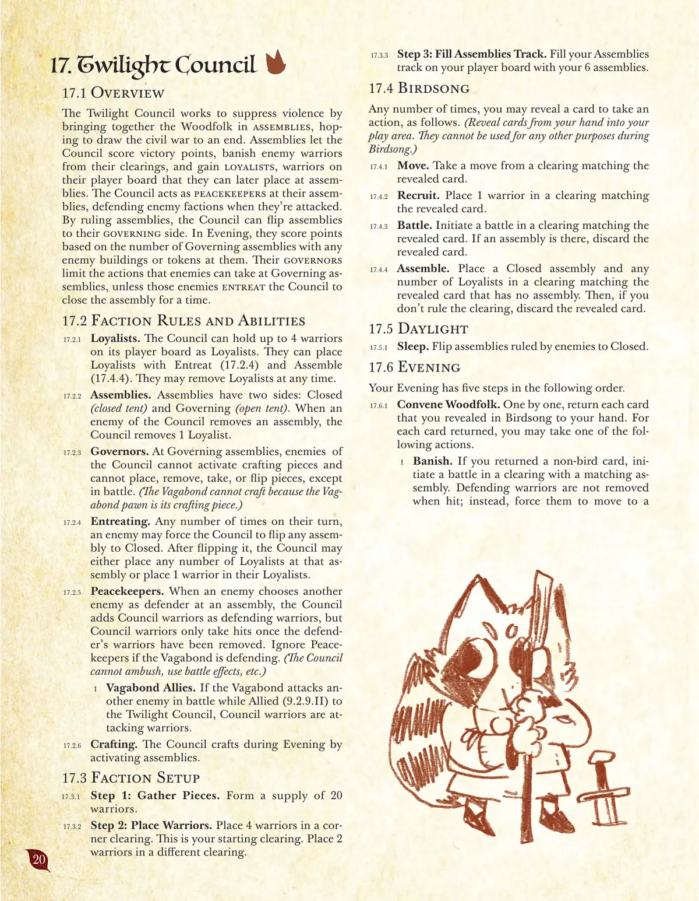
📝 第 20 页 AI 机翻对照（点击展开）
17.3.3 步骤3：填充议会轨道。用你的6个议会填充你玩家版图上的议会轨道。
17.4 鸟鸣
你可以任意次数地展示一张牌来执行一个行动，如下所示。（将你手牌中的牌展示到你的游戏区域。在鸟鸣阶段，这些牌不能用于任何其他目的。）
17.4.1 移动。从与展示牌匹配的空地中执行一次移动。
17.4.2 招募。在与展示牌匹配的空地中放置1个战士。
17.4.3 战斗。在与展示牌匹配的空地中发起一场战斗。如果那里有一个议会，则弃置展示的牌。
17.4.4 议会。将一个封闭议会和任意数量的忠诚者放置在与展示牌匹配且没有议会的空地中。然后，如果你不统治该空地，则弃置展示的牌。
17.5 白昼
17.5.1 休眠。将被敌人统治的议会翻转为封闭状态。
17.6 黄昏
你的黄昏阶段按以下顺序包含五个步骤。
17.6.1 召集林民。依次将在鸟鸣阶段展示的每张牌返回到手牌。对于每张返回的牌，你可以执行以下行动之一。
I 驱逐。如果你返回的是非鸟类牌，则在有匹配议会的空地中发起一场战斗。被攻击的战士被击中时不会被移除；而是强制他们移动到
- 黄昏议会 B
17.1 概述
黄昏议会通过召集林民组建议会，努力抑制暴力，希望结束内战。议会让议会能够获得胜利点，从空地中驱逐敌方战士，并获得忠诚者（他们玩家版图上的战士，之后可以放置在议会中）。议会作为其议会的和平维护者，在敌方派系受到攻击时进行防御。通过统治议会，议会可以将议会翻转为他们治理的一面。在黄昏阶段，他们会根据有敌方建筑或指示物的治理议会数量来计分。他们的总督限制了敌人在治理议会可以执行的行动，除非那些敌人请求议会暂时关闭议会。
17.2 派系规则和能力
17.2.1 忠诚者。议会可以在其玩家版图上持有最多4个战士作为忠诚者。他们可以通过恳求(17.2.4)和议会(17.4.4)来放置忠诚者。他们可以随时移除忠诚者。
17.2.2 议会。议会有两面：封闭状态（封闭帐篷）和治理状态（开放帐篷）。当议会的敌人移除一个议会时，议会移除1个忠诚者。
17.2.3 总督。在治理议会中，议会的敌人无法激活工艺组件，也无法放置、移除、拿取或翻转组件，除非
17.2.4 恳求。在其回合中，敌人可以任意次数强制议会将任何集会翻转为关闭状态。翻转后，议会可以选择在该集会上放置任意数量的忠诚者，或在他们的忠诚者中放置1个战士。
17.2.5 维和者。当敌人在集会上选择另一个敌人作为防御者时，议会会添加议会战士作为防御战士，但议会战士只有在防御者的战士被移除后才会受到伤害。如果流浪者正在防御，则忽略维和者。（议会不能伏击、使用战斗效果等）
I 流浪者盟友。如果流浪者在与暮光议会结盟（9.2.9.II）的情况下攻击另一个敌人，议会战士是攻击战士。
17.2.6 制作。议会通过激活集会在傍晚时段进行制作。
17.3 派系设置
17.3.1 步骤1：收集棋子。准备20个战士的供应。
17.3.2 步骤2：放置战士。在一片角落空地上放置4个战士。这是你的起始空地。在另一片空地上放置2个战士。
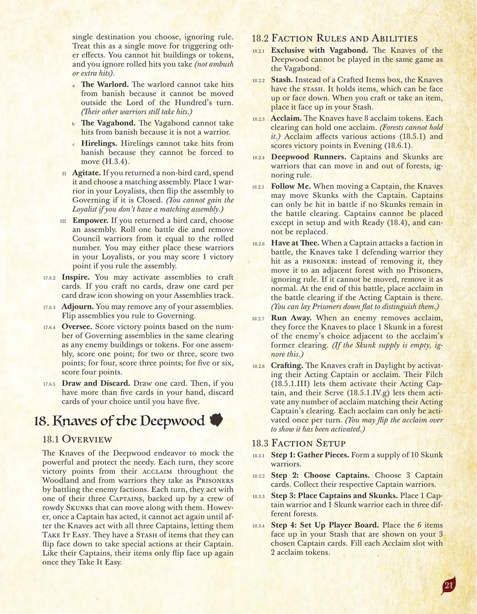
📝 第 21 页 AI 机翻对照（点击展开）
18.2 派系规则与能力
18.2.1 与流浪者互斥。深林恶棍不能与流浪者在同一游戏中游玩。
18.2.2 藏匿处。深林恶棍没有手工制品盒，而是有藏匿处。它可以存放物品，物品可以正面朝上或正面朝下。当你制作或获取物品时，将其正面朝上放入你的藏匿处。
18.2.3 声望。深林恶棍有8个声望指示物。每个空地可以容纳一个声望。（森林不能容纳声望。）声望影响各种行动（18.5.1）并在傍晚计分时获得胜利点（18.6.1）。
18.2.4 深林跑者。船长和臭鼬是战士，可以进出森林，无视规则。
18.2.5 跟我来。当移动船长时，深林恶棍可以与船长一起移动臭鼬。只有在战斗空地中没有臭鼬剩余时，船长才会在战斗中被击中。船长只能在设置阶段和通过准备（18.4）时放置，且不能被替换。
18.2.6 攻击他们。当船长在战斗中攻击一个派系时，深林恶棍将击中的1个防御性战士作为俘虏带走：不移除它，而是将其移动到相邻的无俘虏的森林，无视规则。如果无法移动，则正常移除。在此战斗结束时，如果行动船长在战斗空地，则在战斗空地放置声望。（你可以将俘虏平放以区分它们。）
18.2.7 逃跑。当敌人移除声望时，他们迫使深林恶棍在敌人选择的、与声望原空地相邻的森林中放置1个臭鼬。（如果臭鼬供应已空，则忽略此效果。）
18.2.8 制作。深林恶棍在白天通过激活他们的行动船长或声望来制作物品。他们的偷窃（18.5.1.III）让他们可以激活他们的行动船长，而他们的侍奉（18.5.1.IV.g）让他们可以激活与他们行动船长所在空地匹配的任意数量的声望。每个声望每回合只能激活一次。（你可以翻转声望以显示它已被激活。）
18.3 派系设置
18.3.1 步骤1：收集棋子。组成10个臭鼬战士的供应。
18.3.2 步骤2：选择船长。选择3张船长卡。收集相应的船长战士。
18.3.3 步骤3：放置船长和臭鼬。在三个不同的森林中各放置1个船长战士和1个臭鼬战士。
18.3.4 步骤4：设置玩家版图。将你选择的3张船长卡上显示的6个物品正面朝上放入你的藏匿处。每个声望槽位放入2个声望指示物。
single destination you choose, ignoring rule.
Treat this as a single move for triggering oth
er effects. You cannot hit buildings or tokens,
and you ignore rolled hits you take (not ambush
or extra hits).
a The Warlord. The warlord cannot take hits
17.6.2 激励。你可以激活议会来制作卡牌。如果你没有制作任何卡牌，根据你的议会轨道上显示的摸牌图标数量摸一张牌。
17.6.3 休会。你可以移除你的任何议会。将你统治的议会翻转为执政状态。
17.6.4 监督。根据与任何敌方建筑或指示物在同一林中空地的执政议会数量获得胜利点。一个议会得一分；两个或三个议会得两分；四个议会得三分；五个或六个议会得四分。
17.6.5 摸牌与弃牌。摸一张牌。然后，如果你的手牌超过五张，选择弃牌直到你有五张。
- 深林恶棍 S
18.1 概述
深林恶棍致力于嘲弄强权并保护弱者。每个回合，他们通过在整个林地获得的声望以及通过与其他敌对派系战斗俘获的战士来获得胜利点。每个回合，他们会使用他们的三位船长之一行动，并由一群可以随他们移动的吵闹臭鼬支持。然而，一旦一位船长行动过，直到深林恶棍使用完所有三位船长后才能再次行动，让他们轻松一下。他们有一批物品，可以翻面来在其船长处执行特殊行动。与他们的船长一样，这些物品只有在他们轻松一下后才会再次翻面。
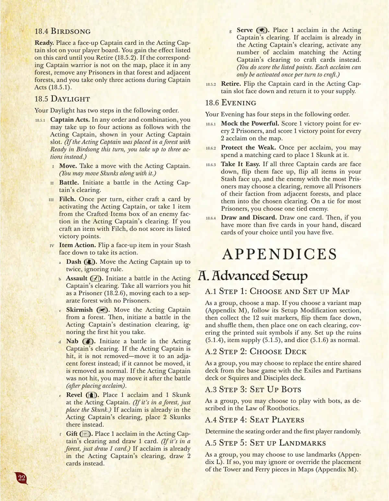
📝 第 22 页 AI 机翻对照（点击展开）
g 侍奉（H）。在现任船长（Acting Captain）的空地上放置1声望。如果声望已经在现任船长的空地上，激活与现任船长空地上声望数量相同的任意数量的声望来制作卡牌。（你确实会获得列出的分数。每回合每声望只能被激活一次用于制作。）
18.5.2 退役。将现任船长槽位中的船长卡牌翻面并放回你的供应区。
18.6 黄昏
你的黄昏按以下顺序有四个步骤。
18.6.1 嘲弄权贵。每2名囚犯获得1胜利点，地图上每2点声望获得1胜利点。
18.6.2 保护弱者。每声望一次，你可以花费一张匹配的卡牌在其上放置1只臭鼬。
18.6.3 放松。如果三张船长卡牌都面朝下，将它们翻面，将你储藏区中的所有物品翻面，囚犯最多的敌人可以选择一个空地，移除其派系中所有来自相邻森林的囚犯，并将他们放入所选空地。如果囚犯数量最多者有平局，你选择一个平局的敌人。
18.6.4 抽牌与弃牌。抽一张牌。然后，如果你的手牌超过五张，选择弃牌直到你有五张。
附录
A. 高级设置
A.1 步骤1：选择并设置地图
作为一个团体，选择一张地图。如果你选择一张变体地图（附录M），遵循其设置修改部分，然后收集12个花色标记，将它们面朝下洗牌，然后在每个空地上放置一个，覆盖任何印刷的花色符号。如常设置废墟（5.1.4）、物品供应（5.1.5）和骰子（5.1.6）。
A.2 步骤2：选择牌库
作为一个团体，你可以选择用流亡者和党徒牌库或侍从和信徒牌库替换基础游戏中的整个共享牌库。
A.3 步骤3：设置机器人
作为一个团体，你可以选择按照机器人法则（Law of Rootbotics）的描述使用机器人进行游戏。
A.4 步骤4：安排玩家座位
随机确定座位顺序和起始玩家。
A.5 步骤5：设置地标
作为一个团体，你可以选择使用地标（附录L）。如果这样做，你可以忽略或覆盖地图（附录M）中塔和渡船棋子的放置。
18.4 鸟鸣
准备。在你的玩家板上将一张面朝上的船长卡牌放入现任船长槽位。你获得这张卡列出的效果，直到你退役（18.5.2）。如果对应的船长战士不在地图上，将其放置在任何森林中，移除该森林和相邻森林中的所有囚犯，并且在船长行动（18.5.1）期间你只能进行三个行动。
18.5 白昼
你的白昼按以下顺序有两个步骤。
18.5.1 船长行动。以任意顺序和组合，你可以进行最多四个行动，如下：
代理船长，显示在你的代理船长槽位中。（如果本回合代理船长被放置在有"准备就绪"的森林中，你可以执行多达三个行动。）
I 移动。使用代理船长进行一次移动。（你可以同时移动臭鼬。）
II 战斗。在代理船长的空地上发起一场战斗。
III 偷窃。每回合一次，要么通过激活代理船长制作一张卡牌，要么从代理船长所在空地的敌方派系"已制作物品"盒中拿取1个物品。如果你使用偷窃制作物品，不得获得其列出的胜利点。
IV 物品行动。将你储藏区的一张正面朝上的物品翻面以执行其行动。
a 冲刺（M）。移动代理船长最多两次，忽略规则。
b 突袭（S）。在代理船长的空地上发起一场战斗。将你击中的所有战士作为俘虏（18.2.6）带走，将每个俘虏移动到一个没有俘虏的单独森林中。
c 小规模冲突（C）。将代理船长从一座森林移出。然后在代理船长的目标空地上发起一场战斗，忽略你受到的第一次打击。
d 擒获（B）。在代理船长的空地上发起一场战斗。如果代理船长被击中，它不会被移除——而是将其移动到相邻的森林；如果无法移动，则按常规方式移除。如果代理船长未被击中，你可以在战斗后（放置喝彩后）移动它。
e 狂欢（T）。在代理船长处放置1个喝彩和1个臭鼬。（如果在森林中，只放置臭鼬。）如果喝彩已经在代理船长的空地中，则在那里放置2个臭鼬。
f 赠礼（X）。在代理船长的空地中放置1个喝彩并摸1张牌。（如果在森林中，只摸1张牌。）如果喝彩已经在代理船长的空地中，则摸2张牌。
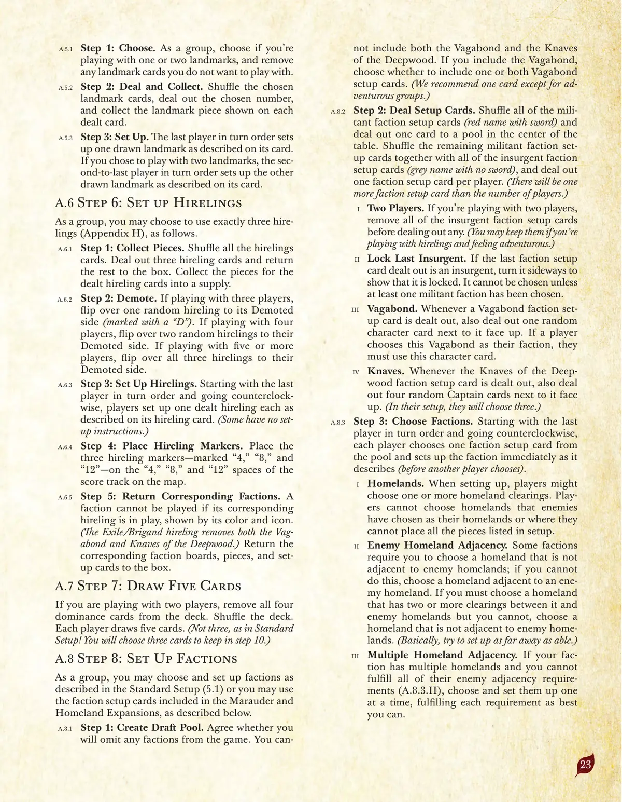
📝 第 23 页 AI 机翻对照（点击展开）
不能同时包含流浪者（Vagabond）和深林恶棍（Knaves of the Deepwood）。如果包含流浪者，选择是否包含一张或两张流浪者设置卡。（我们建议一张，除非是喜欢冒险的群体。）
A.8.2 步骤2：分发设置卡。洗混所有激进派系设置卡（红色名称带剑），并向桌子中央的牌堆分发一张。将剩余的激进派系设置卡与所有叛乱派系设置卡（灰色名称无剑）一起洗混，然后为每位玩家分发一张派系设置卡。（将会有比玩家数量多一张的派系设置卡。）
I 两位玩家。如果你们是两位玩家，在分发任何卡牌前，移除所有叛乱派系设置卡。（如果你们使用雇佣兵并且喜欢冒险，可以保留它们。）
II 锁定最后一张叛乱派系卡。如果最后分发出的派系设置卡是叛乱派系，将其横向放置以显示它已被锁定。除非至少选择了一个激进派系，否则不能选择它。
III 流浪者。每当分发出流浪者派系设置卡时，也在其旁边正面朝上分发一张随机角色卡。如果玩家选择此流浪者作为他们的派系，他们必须使用此角色卡。
IV 深林恶棍。每当分发出深林恶棍派系设置卡时，也在其旁边正面朝上分发四张随机船长卡。（在他们的设置中，他们将选择三张。）
A.8.3 步骤3：选择派系。从回合顺序的最后一位玩家开始，逆时针进行，每位玩家从牌堆中选择一张派系设置卡，并立即按照描述设置该派系（在另一位玩家选择之前）。
I 故乡。设置时，玩家可能会选择一个或多个故乡空地。玩家不能选择敌人已选为故乡的空地，或者无法放置设置中列出的所有棋子的地方。
II 敌人故乡相邻性。某些派系要求你选择一个不与敌人故乡相邻的故乡；如果你无法做到这一点，选择一个与敌人故乡相邻的故乡。如果你必须选择一个与敌人故乡之间有两个或更多空地的故乡但无法做到，则选择一个不与敌人故乡相邻的故乡。（基本上，尽量设置得尽可能远。）
III 多个故乡相邻性。如果你的派系有多个故乡，并且你无法满足它们所有的敌人相邻性要求（A.8.3.II），则一次选择并设置它们，尽可能满足每个要求。
A.5.1 步骤1：选择。作为一个团体，选择你们是否使用一个或两个地标，并移除任何不想玩的地标卡。
A.5.2 步骤2：分发和收集。洗选定的地标牌，分发选定的数量，并收集每张分发牌上显示的地标指示物。
A.5.3 步骤3：设置。回合顺序的最后一名玩家按照其牌上的描述设置一个抽到的地标。如果选择使用两个地标，则回合顺序的倒数第二名玩家按照其牌上的描述设置另一个抽到的地标。
A.6 步骤6：设置雇员
作为一个团体，你们可以选择使用恰好三名雇员（附录H），具体如下。
A.6.1 步骤1：收集指示物。洗所有雇员牌。分发三张雇员牌，其余放回盒中。将分发牌的雇员指示物收集到一个供应区。
A.6.2 步骤2：降级。如果三人游戏，随机翻转一张雇员牌到其降级面（标记有"D"）。如果四人游戏，随机翻转两张雇员牌到其降级面。如果五人或更多玩家，翻转所有三张雇员牌到其降级面。
A.6.3 步骤3：设置雇员。从回合顺序的最后一名玩家开始逆时针，玩家按照其雇员牌上的描述各设置一个分发的雇员。（有些没有设置说明。）
A.6.4 步骤4：放置雇员标记。将三个标记为"4"、"8"和"12"的雇员标记放置在版图计分轨道的"4"、"8"和"12"格上。
A.6.5 步骤5：归还对应派系。如果其对应的雇员在游戏中，则该派系不能被游玩，通过其颜色和图标显示。（流亡者/强盗雇员同时移除流浪者和深林恶棍。）将对应的派系版图、指示物和设置牌放回盒中。
A.7 步骤7：抽五张牌
如果你们是两人游戏，从牌库中移除所有四张优势牌。洗牌。每位玩家抽五张牌。（不是标准设置中的三张！你们将在步骤10中选择三张牌保留。）
A.8 步骤8：设置派系
作为一个团体，你们可以选择并按照标准设置（5.1）中的描述设置派系，或者使用掠夺者和故土扩展中包含的派系设置牌，如下所述。
A.8.1 步骤1：创建选池。商议是否要在游戏中省略任何派系。你们可以
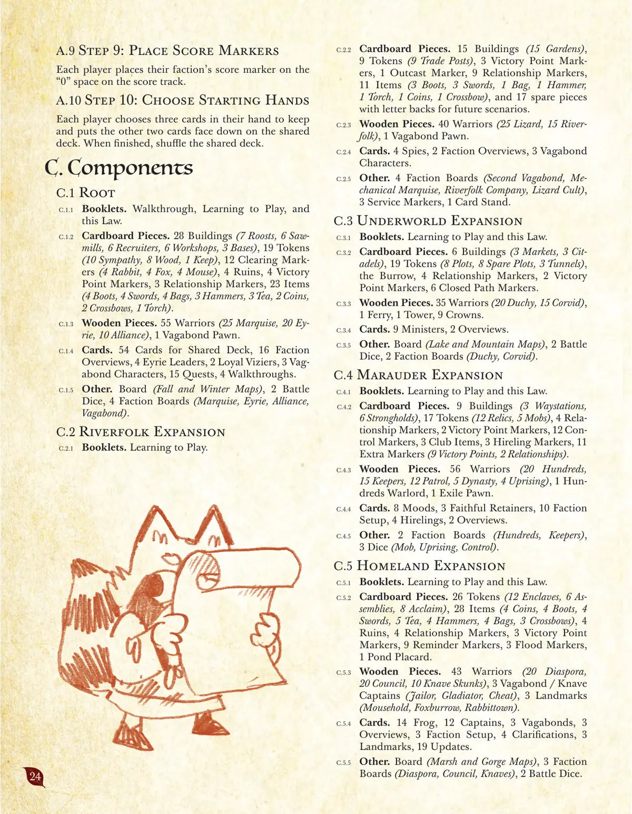
📝 第 24 页 AI 机翻对照（点击展开）
A.9 步骤9：放置分数指示物
每位玩家将其派系的分数指示物放置在分数轨道上的"0"格。
A.10 步骤10：选择起始手牌
每位玩家选择手牌中的三张卡牌保留，并将另外两张卡牌牌面朝下放在共享牌库上。完成后，洗混共享牌库。
C. 游戏组件
C.1 Root
C.1.1 小册子。游戏指南、入门教程和本规则书。
C.1.2 纸板组件。28个建筑（7个鸟巢、6个锯木厂、6个招募站、6个工坊、3个基地），19个指示物（10个同情指示物、8个木材指示物、1个城堡），12个空地标记（4个兔子、4个狐狸、4个老鼠），4个废墟，4个胜利点指示物，3个关系指示物，23个物品（4双靴子、4把剑、4个袋子、3把锤子、3份茶、2枚硬币、2把十字弩、1个火炬）。
C.1.3 木制组件。55个战士（25个侯爵、20个鹰巢、10个联盟），1个流浪者棋子。
C.1.4 卡牌。54张共享牌库卡牌，16张派系概览卡，4张鹰巢领袖卡，2张忠诚大臣卡，3张流浪者角色卡，15张任务卡，4张游戏指南卡。
C.1.5 其他。版图（秋季和冬季地图），2个战斗骰子，4张派系版图（侯爵、鹰巢、联盟、流浪者）。
C.2 河族扩展
C.2.1 小册子。入门教程。
C.2.2 纸板组件。15个建筑（15个花园），9个指示物（9个贸易站），3个胜利点指示物，1个流亡者标记，9个关系指示物，11个物品（3双靴子、3把剑、1个袋子、1把锤子、1个火炬、1枚硬币、1把十字弩），以及17个带有字母背面的备用组件，用于未来场景。
C.2.3 木制组件。40个战士（25个蜥蜴、15个河族），1个流浪者棋子。
C.2.4 卡牌。4张间谍卡，2张派系概览卡，3张流浪者角色卡。
C.2.5 其他。4张派系版图（第二个流浪者、机械侯爵、河族公司、蜥蜴教团），3个服务标记，1个卡牌支架。
C.3 地下世界扩展
C.3.1 小册子。入门教程和本规则书。
C.3.2 纸板组件。6个建筑（3个市场、3个城堡），19个指示物（8个阴谋、8个备用阴谋、3个隧道），洞穴，4个关系指示物，2个胜利点指示物，6个封闭路径标记。
C.3.3 木制组件。35个战士（20个公国、15渡鸦），1艘渡船，1座塔，9个王冠。
C.3.4 卡牌。9张大臣卡，2张概览卡。
C.3.5 其他。版图（湖泊和山脉地图），2个战斗骰子，2张派系版图（公国、渡鸦）。
C.4 掠夺者扩展
C.4.1 小册子。入门教程和本规则书。
C.4.2 纸板组件。9个建筑（3个驿站、6个要塞），17个指示物（12个圣物、5个暴民），4个关系指示物，2个胜利点指示物，12个控制标记，3个俱乐部物品，3个雇佣标记，11个额外标记（9个胜利点、2个关系）。
C.4.3 木制组件。56个战士（20个百人队、15个守护者、12个巡逻队、5个王朝、4个起义），1个百人队指挥官，1个流亡者棋子。
C.4.4 卡牌。8种情绪，3名忠实仆从，10个派系设置，4名雇工，2张概览卡。
C.4.5 其他。2张派系版图（Hundreds，Keepers），3个骰子（Mob，Uprising，Control）。
C.5 故乡扩展
C.5.1 小册子。游戏入门指南和本规则书。
C.5.2 纸板部件。26个指示物（12个飞地，6个集会，8个赞誉），28个物品（4个金币，4双靴子，4把剑，5份茶，4把锤子，4个袋子，3把十字弩），4个废墟，4个关系标记，3个胜利点标记，9个提醒标记，3个洪水标记，1个池塘卡牌。
C.5.3 木制部件。43名战士（20个流亡者，20个议会，10个无赖臭鼬），3名流浪者/无赖船长（狱卒，角斗士，骗子），3个地标（Mousehold，Foxburrow，Rabbittown）。
C.5.4 卡牌。14张青蛙卡，12张船长卡，3张流浪者卡，3张概览卡，3张派系设置卡，4张澄清卡，3张地标卡，19张更新卡。
C.5.5 其他。版图（沼泽和峡谷地图），3张派系版图（流亡者，议会，无赖），2个战斗骰子。
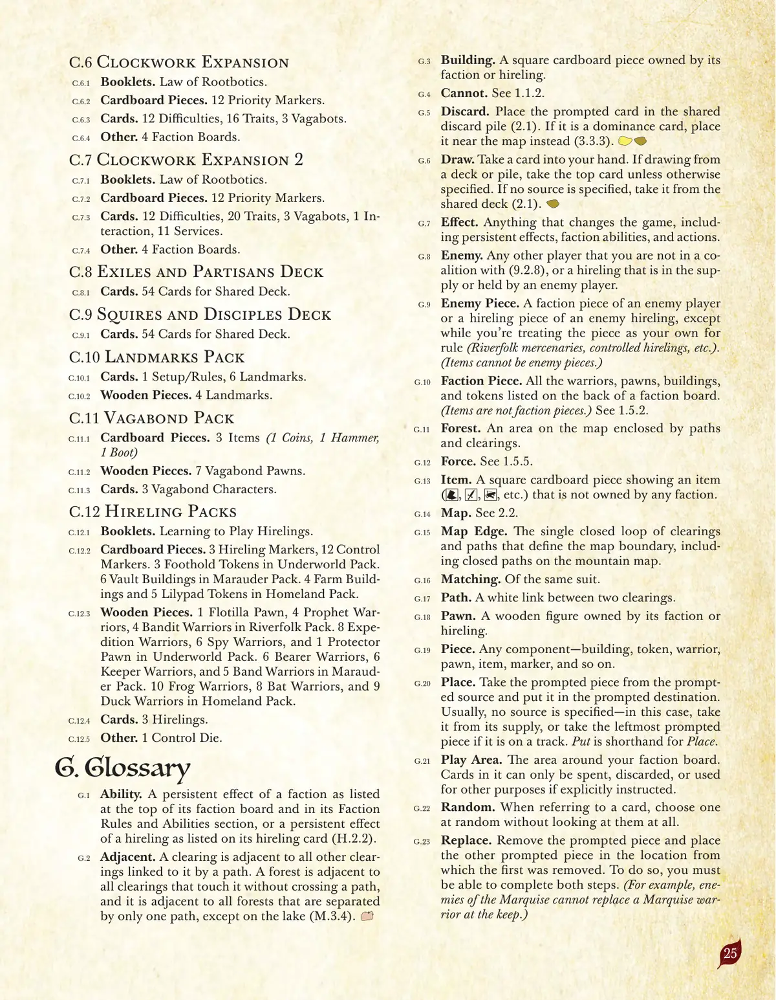
📝 第 25 页 AI 机翻对照（点击展开）
C.6 机械扩展
C.6.1 小册子。机器人法则。
C.6.2 纸板部件。12个优先级标记。
C.6.3 卡牌。12个难度，16个特性，3个流浪机器人。
C.6.4 其他。4个派系版图。
C.7 机械扩展 2
C.7.1 小册子。机器人法则。
C.7.2 纸板部件。12个优先级标记。
C.7.3 卡牌。12个难度，20个特性，3个流浪机器人，1个
互动，11个服务。
C.7.4 其他。4个派系版图。
C.8 流放者与党羽牌库
C.8.1 卡牌。54张共用牌库的卡牌。
C.9 侍从与信徒牌库
C.9.1 卡牌。54张共用牌库的卡牌。
C.10 地标包
C.10.1 卡牌。1张设置/规则，6个地标。
C.10.2 木制部件。4个地标。
C.11 流浪者包
C.11.1 纸板部件。3个物品（1个金币，1个锤子，
1只靴子）
C.11.2 木制部件。7个流浪者棋子。
C.11.3 卡牌。3个流浪者角色。
C.12 雇佣兵包
C.12.1 小册子。学习游玩雇佣兵。
C.12.2 纸板部件。3个雇佣兵标记，12个控制标记。在地下世界包中有3个立足点指示物。在掠夺者包中有6个地堡建筑。在故土包中有4个农场建筑和5个睡莲指示物。
C.12.3 木制部件。在河族包中有1个舰队棋子，4个先知战士，4个匪徒战士。在地下世界包中有8个探险战士，6个间谍战士和1个保护者棋子。在掠夺者包中有6个携带者战士，6个守护者战士和5个帮派战士。在故土包中有10个青蛙战士，8个蝙蝠战士和9只鸭子战士。
C.12.4 卡牌。3个雇佣兵。
C.12.5 其他。1个控制骰子。
G. 术语表
G.1 能力。派系在其派系版图顶部列出的持久效果，以及在其派系规则与能力部分列出的持久效果，或是雇佣兵在其雇佣兵卡牌上列出的持久效果（H.2.2）。
G.2 相邻。一个空地通过路径与所有其他相连的空地相邻。一片森林与所有不跨越路径而接触它的空地相邻，并且与所有仅被一条路径隔开的森林相邻，但在湖泊上除外（M.3.4）。D
G.3 建筑。由其派系或雇佣兵拥有的方形纸板部件。
G.4 不能。见1.1.2。
G.5 弃牌。将提示的卡牌放入共用弃牌堆（2.1）。如果是优势卡牌，则将其放在地图旁边（3.3.3）。LF
G.6 摸牌。将一张卡牌收入手牌。如果从牌库或牌堆中摸牌，除非另有说明，否则取顶部的牌。如果没有指定来源，则从共用牌库中抽取（2.1）。F
G.7 效果。任何改变游戏的事物，包括持久效果、派系能力和行动。
G.8 敌人。任何你没有结成联盟的其他玩家（9.2.8），或在补给中或被敌方玩家持有的雇佣兵。
G.9 敌方棋子。敌方玩家的派系棋子或敌方雇佣兵的雇佣兵棋子，但在你根据规则（如河族雇佣兵、受控雇佣兵等）将该棋子视为己方棋子时除外。
（物品不能是敌方棋子。）
G.10 派系棋子。派系版背面上列出的所有战士、棋子、建筑和指示物。
（物品不是派系棋子。）参见 1.5.2。
G.11 森林。地图上被路径和空地包围的区域。
G.12 力量。参见 1.5.5。
G.13 物品。显示物品（M、S、C 等）的方形纸板，不属于任何派系。
G.14 地图。参见 2.2。
G.15 地图边缘。定义地图边界的单个闭合空地和路径环，包括山地地图上的闭合路径。
G.16 匹配。同花色。
G.17 路径。连接两个空地的白色连接线。
G.18 棋子。由其派系或雇佣兵拥有的木质人形。
G.19 棋子。任何组件——建筑、指示物、战士、棋子、物品、标记等等。
G.20 放置。从指定的来源取出提示的棋子，并将其放入指定的目的地。通常不指定来源——在这种情况下，从其供应区取出，或者如果它在轨道上，则取出最左边的提示棋子。Put 是 Place 的简写。
G.21 游戏区域。你派系版周围的区域。其中的卡牌只有在明确指示时才能被使用、弃置或用于其他目的。
G.22 随机。当指代卡牌时，完全不查看它们，随机选择一张。
G.23 替换。移除提示的棋子，并将另一个提示的棋子放置在第一个棋子被移除的位置。为此，你必须能够完成两个步骤。（例如，侯爵的敌人不能在要塞替换侯爵的战士。）
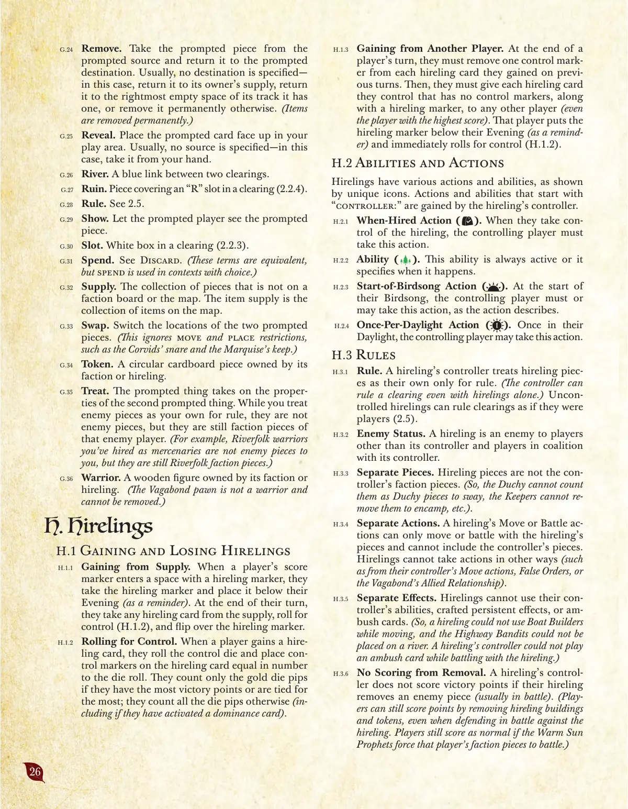
📝 第 26 页 AI 机翻对照（点击展开）
G.24 移除。从指定来源取走指定棋子，并将其放回指定目的地。通常不指定目的地——在这种情况下，将其归还给其拥有者的储备库，归还给其轨道上最右侧的空格（如果有），否则永久移除。（物品被永久移除。）
G.25 展示。将指定卡牌正面朝上放置在你的游戏区域。通常不指定来源——在这种情况下，从你的手牌中取出。
G.26 河流。连接两个林间空地的蓝色连接线。
G.27 废墟。覆盖林间空地中"R"槽位的棋子（2.2.4）。
G.28 规则。参见2.5。
G.29 显示。让指定玩家查看指定棋子。
G.30 槽位。林间空地中的白色方框（2.2.3）。
G.31 使用。参见弃牌。（这些术语是等价的，但使用用于有选择的情况下。）
G.32 储备库。不在派系版图或地图上的棋子集合。物品储备库是地图上的物品集合。
G.33 交换。交换两个指定棋子的位置。（这忽略移动和放置限制，例如乌鸦的陷阱和侯爵的城堡。）
G.34 指示物。由其派系或雇佣兵拥有的圆形纸板棋子。
G.35 视为。指定事物获得第二个指定事物的特性。当你在规则上将敌方棋子视为己方时，它们不是敌方棋子，但它们仍然是该敌方玩家的派系棋子。（例如，你雇佣为雇佣兵的河民战士对你来说不是敌方棋子，但它们仍然是河民派系的棋子。）
G.36 战士。由其派系或雇佣兵拥有的木质人形棋子。（流浪者棋子不是战士，不能被移除。）
H. 雇佣兵
H.1 获得和失去雇佣兵
H.1.1 从储备库获得。当玩家的分数标记进入带有雇佣兵标记的区域时，他们取走雇佣兵标记并将其放在他们的傍晚标记下方（作为提醒）。在他们的回合结束时，他们从储备库中取走任何雇佣兵卡牌，进行控制骰（H.1.2），然后翻转雇佣兵标记。
H.1.2 进行控制骰。当玩家获得雇佣兵卡牌时，他们投掷控制骰并在雇佣兵卡牌上放置与骰子点数数量相等的控制标记。如果他们拥有最多的胜利点数或并列最多，他们只计算金色骰子点数；否则他们计算所有骰子点数（包括如果他们激活了优势卡牌的情况）。
H.1.3 从其他玩家获得。在玩家回合结束时，他们必须移除他们在先前回合获得的每张雇佣兵卡牌上的一个控制标记。然后，他们必须将他们控制的没有控制标记的每张雇佣兵卡牌，连同雇佣兵标记，交给任何其他玩家（即使
分数最高的玩家)。该玩家将佣兵指示物放在他们的"黄昏"(Evening)下方（作为提醒），并立即进行控制骰检定(H.1.2)。
H.2 能力与行动
佣兵拥有各种行动和能力，如独特的图标所示。以"controller:"（控制者）开头的行动和能力由佣兵的控制者获得。
H.2.1 受雇行动(
)。当玩家控制佣兵时，控制者必须执行此行动。
H.2.2 能力(
)。此能力始终处于激活状态，或指定了其发生时机。
H.2.3 鸟鸣开始行动(
)。在鸟鸣(Birdsong)开始时，控制者必须或可以执行此行动，具体取决于行动描述。
H.2.4 每日光行动(
)。在日光(Daylight)期间，控制者可以执行一次此行动。
H.3 规则
H.3.1 规则。佣兵的控制者仅将佣兵棋子视为自己的棋子用于规则判定。（即使只有佣兵，控制者也可以裁决空地。）未受控制的佣兵可以像玩家一样裁决空地(2.5)。
H.3.2 敌对状态。佣兵对其控制者以外的玩家以及与其控制者结盟的玩家是敌人。
H.3.3 分离棋子。佣兵棋子不是控制者的派系棋子。（因此，公国不能将它们视为公国棋子来影响，守护者不能将它们移入营地等。）
H.3.4 分离行动。佣兵的移动或战斗行动只能移动或战斗佣兵的棋子，不能包含控制者的棋子。佣兵不能以其他方式执行行动（例如从控制者的移动行动、虚假命令或流浪者的同盟关系中获得）。
H.3.5 分离效果。佣兵不能使用控制者的能力、制作的持续效果或伏击卡。（因此，佣兵在移动时不能使用造船者，强盗不能被放置在河流上。佣兵的控制者在与佣兵战斗时不能打出伏击卡。）
H.3.6 移除不得分。如果佣兵移除敌方棋子（通常在战斗中），佣兵的控制者不得获得胜利点。（玩家仍然可以通过移除佣兵建筑和指示物来得分，即使在与佣兵的战斗中防御。如果暖阳先知迫使该玩家的派系棋子进行战斗，玩家仍然正常得分。）
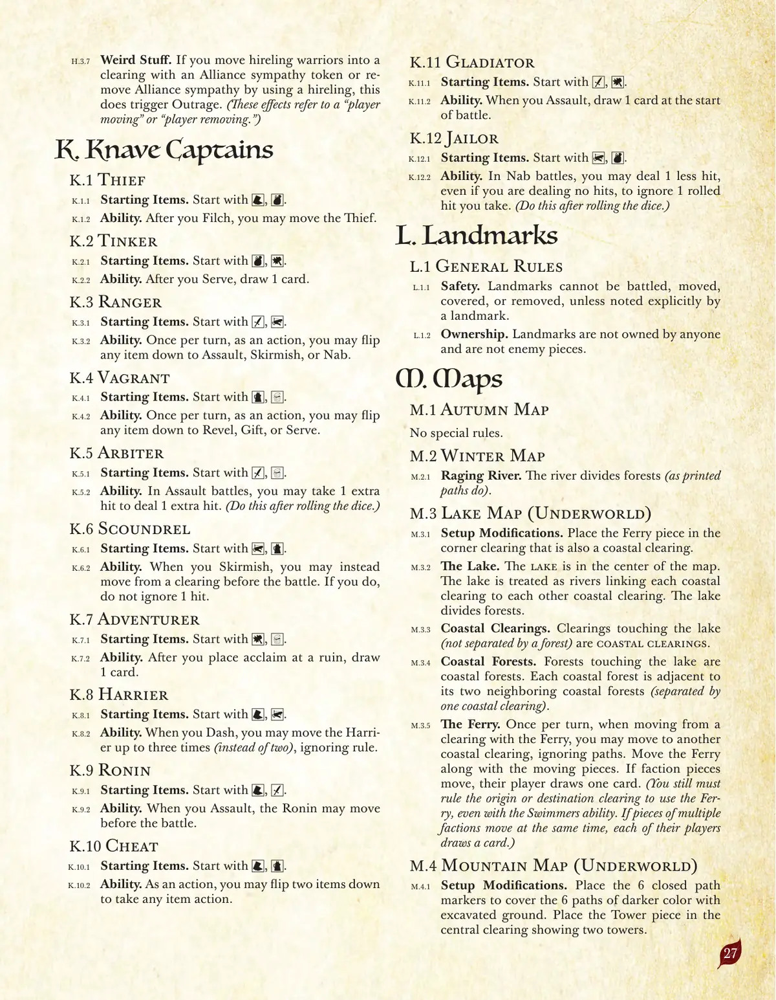
📝 第 27 页 AI 机翻对照（点击展开）
H.3.7 奇怪的事物。如果你将雇佣兵战士移动到一个有联盟同情标记的空地，或者通过使用雇佣兵移除联盟同情，这确实会触发暴怒。（这些效果指的是"玩家移动"或"玩家移除"）
K. 无赖船长
K.1 小偷
K.1.1 初始物品。开始时拥有 M、B。
K.1.2 能力。在你行窃后，你可以移动小偷。
K.2 修补匠
K.2.1 初始物品。开始时拥有 B、H。
K.2.2 能力。在你服务后，摸1张牌。
K.3 游侠
K.3.1 初始物品。开始时拥有 S、C。
K.3.2 能力。每回合一次，作为一个行动，你可以将任何物品翻转为攻击、小规模冲突或抓取。
K.4 流浪者
K.4.1 初始物品。开始时拥有 T、X。
K.4.2 能力。每回合一次，作为一个行动，你可以将任何物品翻转为狂欢、赠礼或服务。
K.5 仲裁者
K.5.1 初始物品。开始时拥有 S、X。
K.5.2 能力。在攻击战斗中，你可以承受1点额外伤害来造成1点额外伤害。（在掷骰子后执行此操作。）
K.6 恶棍
K.6.1 初始物品。开始时拥有 C、T。
K.6.2 能力。当你进行小规模冲突时，你可以改为在战斗前从空地移动。如果你这样做，不要忽略1点伤害。
K.7 冒险家
K.7.1 初始物品。开始时拥有 H、X。
K.7.2 能力。你在废墟上放置赞誉后，摸1张牌。
K.8 骚扰者
K.8.1 初始物品。开始时拥有 M、C。
K.8.2 能力。当你冲刺时，你可以将骚扰者移动多达三次（而不是两次），忽略规则。
K.9 浪人
K.9.1 初始物品。开始时拥有 M、S。
K.9.2 能力。当你攻击时，浪人可以在战斗前移动。
K.10 作弊者
K.10.1 初始物品。开始时拥有 M、T。
K.10.2 能力。作为一个行动，你可以将两件物品翻转为执行任何物品行动。
K.11 角斗士
K.11.1 初始物品。开始时拥有 S、H。
K.11.2 能力。当你攻击时，在战斗开始时摸1张牌。
K.12 狱卒
K.12.1 初始物品。开始时拥有 C、B。
K.12.2 能力。在抓取战斗中，你可以少造成1点伤害，即使你没有造成任何伤害，以忽略你承受的1点掷出的伤害。（在掷骰子后执行此操作。）
L. 地标
L.1 通用规则
L.1.1 安全。地标不能被战斗、移动、覆盖或移除，除非地标明确说明。
L.1.2 所有权。地标不属于任何人，也不是敌方棋子。
M. 地图
M.1 秋季地图
无特殊规则。
M.2 冬季地图
M.2.1 汹涌的河流。河流分隔森林（如印刷路径所示）。
M.3 湖泊地图（地下世界）
M.3.1 设置修改。将渡船放置在同时也是沿海空角的角落空地。
M.3.2 湖泊。湖泊位于地图中心。湖泊被视为河流，将每个沿海空地与其他每个沿海空地连接起来。湖泊
M.3.3 林间空地。与湖泊相邻（没有被森林隔开）的空地是林间空地。
M.3.4 沿海森林。与湖泊相邻的森林是沿海森林。每个沿海森林与其两个相邻的沿海森林相邻（被一个林间空地隔开）。
M.3.5 渡轮。每回合一次，当从带有渡轮的空地移动时，你可以移动到另一个沿海空地，忽略路径。移动棋子时同时移动渡轮。如果派系棋子移动，其玩家摸一张牌。（即使有游泳者能力，你也必须控制起点或目标空地才能使用渡轮。如果多个派系的棋子同时移动，他们的每个玩家都摸一张牌。）
M.4 山地图（地下世界）
M.4.1 设置修改。放置6个封闭路径标记，覆盖6条颜色较深的已挖掘地面的路径。将塔指示物放置在显示两个塔的中央空地。
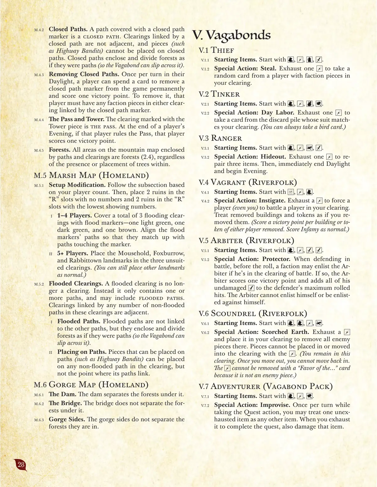
📝 第 28 页 AI 机翻对照（点击展开）
V. 流浪者
V.1 小偷
V.1.1 起始物品。起始拥有 M、F、T、S。
V.1.2 特殊行动：偷窃。消耗一个 F 来从在你的空地中有派系棋子的玩家那里随机抽取一张卡牌。
V.2 修补匠
V.2.1 起始物品。起始拥有 M、F、B、H。
V.2.2 特殊行动：日间劳作。消耗一个 F 来从弃牌堆中抽取一张与你的空地花色匹配的卡牌。（你总是可以抽取一张鸟牌。）
V.3 游侠
V.3.1 起始物品。起始拥有 M、F、C、S。
V.3.2 特殊行动：藏身处。消耗一个 F 来修复三件物品。然后，立即结束白天并开始傍晚。
V.4 流浪者（河民）
V.4.1 起始物品。起始拥有 X、F、M。
V.4.2 特殊行动：煽动。消耗一个 F 来强制一个玩家（甚至是你）与在你空地中的另一个玩家战斗。将移除的建筑和指示物视为你移除它们。（每移除一个玩家的建筑或指示物获得一个胜利点。正常获得恶名。）
V.5 仲裁者（河民）
V.5.1 起始物品。起始拥有 M、F、S、S。
V.5.2 特殊行动：保护者。在战斗中防御时，在投掷骰子前，如果仲裁者在战斗的空地中，一个派系可以征召他。如果这样，仲裁者获得一个胜利点，并将他所有未受损的 S 添加到防御者的最大命中数中。仲裁者不能征召自己也不能被征召来对抗自己。
V.6 无赖（河民）
V.6.1 起始物品。起始拥有 M、M、F、C。
V.6.2 特殊行动：焦土政策。消耗一个 F 并将其放置在你的空地中，以移除那里的所有敌方棋子。棋子不能被放置在带有 F 的空地中或移动到该空地。（你仍留在这个空地。一旦你离开，你就不能再回来。F 不能用" favor of the..."卡牌移除，因为它不是敌方棋子。）
V.7 冒险家（流浪者扩展包）
V.7.1 起始物品。起始拥有 M、F、H。
V.7.2 特殊行动：即兴发挥。在你的回合中，当执行任务行动时，你可以将一件未消耗的物品视为任何其他物品。当你消耗它来完成任务时，同时也要损坏该物品。
M.4.2 封闭路径。被封闭路径标记覆盖的路径是封闭路径。由封闭路径连接的空地不相邻，棋子（例如公路强盗）不能放置在封闭路径上。封闭路径包围并分割森林，就像它们是路径一样（因此流浪者可以穿过它）。
M.4.3 移除封闭路径。玩家在自己的白天阶段，每回合可以花费一张卡牌来永久性地从游戏中移除一个封闭路径标记并获得一个胜利点。要移除它，该玩家必须在由封闭路径标记连接的任一空地中有任何派系棋子。
M.4.4 山口和塔。标记有
M.4.5 森林。山地地图上所有被路径和空地包围的区域都是森林(2.4)，无论其中是否存在或放置了树木。
M.5 沼泽地图（家园）
M.5.1 设置修改。根据你的玩家数量选择相应的小节。然后，将2个废墟放置在没有数字的"R"槽位中，并将2个废墟放置在显示数字最低的"R"槽位中。
I 1-4名玩家。用3个洪水标记覆盖总共3个被淹没的空地——一个浅绿色、一个深绿色和一个棕色。对齐洪水标记的路径，使其与接触标记的路径相匹配。
II 5+名玩家。将鼠穴、狐穴和兔镇地标放置在三个未分配的空地中。（你仍然可以像平常一样放置其他地标。）
M.5.2 被淹没的空地。被淹没的空地不再是空地。相反，它只包含一条或多条路径，并且可能包括被淹没的路径。通过这些空地中任意数量的未被淹没的路径连接的空地是相邻的。
I 被淹没的路径。被淹没的路径不与其他路径连接，但它们包围并分割森林，就像它们是路径一样（因此流浪者可以穿过它）。
II 在路径上放置。可以放置在路径上的棋子（如强盗）可以放置在该空地中的任何未被淹没的路径上，但不能放置在其路径连接的点上。
M.6 峡谷地图（家园）
M.6.1 水坝。水坝将其下方的森林分隔开。
M.6.2 桥。桥梁不将其下方的森林分隔开。
M.6.3 峡谷两侧。峡谷两侧不包含它们所在的森林。
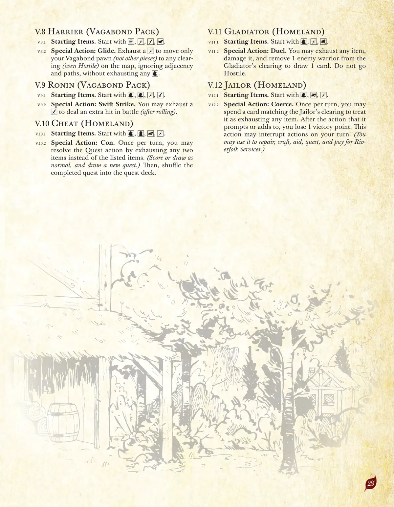
📝 第 29 页 AI 机翻对照（点击展开）
V.8 隼（流浪者包）
V.8.1 初始物品。起始拥有X、F、S、C。
V.8.2 特殊行动：滑翔。消耗一个F来仅移动你的流浪者棋子（不是其他棋子）到地图上的任何空地（即使是敌对空地），忽略相邻性和路径，且不消耗任何M。
V.9 浪人（流浪者包）
V.9.1 初始物品。起始拥有M、M、F、S。
V.9.2 特殊行动：迅捷打击。你可以消耗一个S在战斗中造成一次额外打击（在投骰后）。
V.10 骗子（家园）
V.10.1 初始物品。起始拥有M、T、C、F。
V.10.2 特殊行动：欺骗。每回合一次，你可以通过消耗任意两件物品来解决任务行动（而不是列出的物品）。（正常计分或摸牌，并摸一张新任务。）然后，将已完成任务洗入任务牌库。
V.11 角斗士（家园）
V.11.1 初始物品。起始拥有M、F、H。
V.11.2 特殊行动：决斗。你可以消耗任意一件物品，使其受损，并从角斗士所在的空地移除1个敌方战士来摸1张牌。不要变为敌对状态。
V.12 狱卒（家园）
V.12.1 初始物品。起始拥有M、C、F。
V.12.2 特殊行动：胁迫。每回合一次，你可以花费一张与狱卒所在空地匹配的卡牌，将其视为消耗任意一件物品。在它提示或添加的行动之后，你失去1个胜利点。此行动可以打断你回合上的行动。（你可以用它来修理、制作、援助、任务，并支付河族服务费用。）
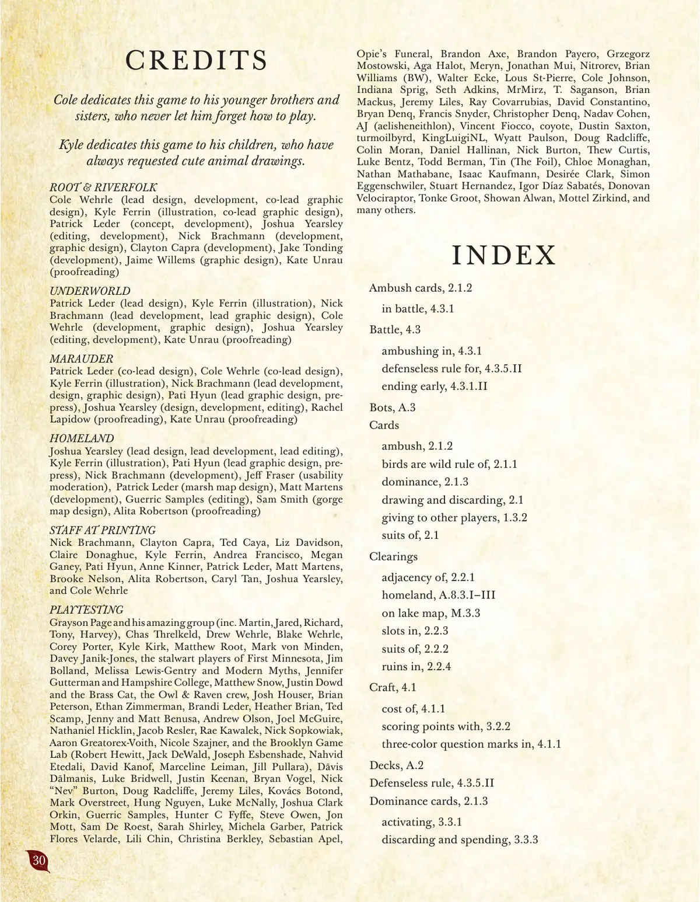
📝 第 30 页 AI 机翻对照（点击展开）
奥比的葬礼，Brandon Axe，Brandon Payero，Grzegorz Mostowski，Aga Halot，Meryn，Jonathan Mui，Nitrorev，Brian Williams (BW)，Walter Ecke，Lous St-Pierre，Cole Johnson，Indiana Sprig，Seth Adkins，MrMirz，T. Saganson，Brian Mackus，Jeremy Liles，Ray Covarrubias，David Constantino，Bryan Denq，Francis Snyder，Christopher Denq，Nadav Cohen，AJ (aelisheneithlon)，Vincent Fiocco，coyote，Dustin Saxton，turmoilbyrd，KingLuigiNL，Wyatt Paulson，Doug Radcliffe，Colin Moran，Daniel Hallinan，Nick Burton，Thew Curtis，Luke Bentz，Todd Berman，Tin (The Foil)，Chloe Monaghan，Nathan Mathabane，Isaac Kaufmann，Desirée Clark，Simon Eggenschwiler，Stuart Hernandez，Igor Díaz Sabatés，Donovan Velociraptor，Tonke Groot，Showan Alwan，Mottel Zirkind，以及许多其他人。
索引
埋伏卡，2.1.2
在战斗中，4.3.1
战斗，4.3
埋伏，4.3.1
无防御规则，4.3.5.II
提前结束，4.3.1.II
机器人，A.3
卡牌
埋伏，2.1.2
百搭鸟规则，2.1.1
优势，2.1.3
抽牌和弃牌，2.1
给予其他玩家，1.3.2
花色，2.1
空地
相邻性，2.2.1
家园，A.8.3.I–III
在湖泊地图上，M.3.3
槽位，2.2.3
花色，2.2.2
废墟，2.2.4
工艺，4.1
成本，4.1.1
得分，3.2.2
三色问号，4.1.1
牌库，A.2
无防御规则，4.3.5.II
优势卡，2.1.3
激活，3.3.1
弃牌和使用，3.3.3
致谢
Cole将这款游戏献给他年幼的兄弟姐妹们，他们从未让他忘记如何玩游戏。
Kyle将这款游戏献给他孩子们，他们一直要求可爱的动物图画。
根与河民
Cole Wehrle（主设计，开发，联合主美术设计），Kyle Ferrin（插画，联合主美术设计），Patrick Leder（概念，开发），Joshua Yearsley（编辑，开发），Nick Brachmann（开发，美术设计），Clayton Capra（开发），Jake Tonding（开发），Jaime Willems（美术设计），Kate Unrau（校对）
地下世界
Patrick Leder（主设计），Kyle Ferrin（插画），Nick Brachmann（主开发，主美术设计），Cole Wehrle（开发，美术设计），Joshua Yearsley（编辑，开发），Kate Unrau（校对）
掠夺者
Patrick Leder（联合主设计），Cole Wehrle（联合主设计），Kyle Ferrin（插画），Nick Brachmann（主开发，设计，美术设计），Pati Hyun（主美术设计，印前），Joshua Yearsley（设计，开发，编辑），Rachel Lapidow（校对），Kate Unrau（校对）
家园
Joshua Yearsley（主设计，主开发，主编辑），Kyle Ferrin（插画），Pati Hyun（主美术设计，印前），Nick Brachmann（开发），Jeff Fraser（可用性
Patrick Leder (沼泽地图设计), Matt Martens (开发), Guerric Samples (编辑), Sam Smith (峡谷地图设计), Alita Robertson (校对)
印刷工作人员
Nick Brachmann, Clayton Capra, Ted Caya, Liz Davidson,
Claire Donaghue, Kyle Ferrin, Andrea Francisco, Megan
Ganey, Pati Hyun, Anne Kinner, Patrick Leder, Matt Martens,
Brooke Nelson, Alita Robertson, Caryl Tan, Joshua Yearsley,
以及 Cole Wehrle
测试游戏
Grayson Page 及其出色的团队 (包括 Martin, Jared, Richard,
Tony, Harvey), Chas Threlkeld, Drew Wehrle, Blake Wehrle,
Corey Porter, Kyle Kirk, Matthew Root, Mark von Minden,
Davey Janik-Jones, First Minnesota 的坚定玩家, Jim
Bolland, Melissa Lewis-Gentry 和 Modern Myths, Jennifer
Gutterman 和 Hampshire College, Matthew Snow, Justin Dowd
和 Brass Cat, Owl & Raven 团队, Josh Houser, Brian
Peterson, Ethan Zimmerman, Brandi Leder, Heather Brian, Ted
Scamp, Jenny 和 Matt Benusa, Andrew Olson, Joel McGuire,
Nathaniel Hicklin, Jacob Resler, Rae Kawalek, Nick Sopkowiak,
Aaron Greatorex-Voith, Nicole Szajner, 以及 Brooklyn Game
Lab (Robert Hewitt, Jack DeWald, Joseph Esbenshade, Nahvid
Etedali, David Kanof, Marceline Leiman, Jill Pullara), Dāvis
Dālmanis, Luke Bridwell, Justin Keenan, Bryan Vogel, Nick
"Nev" Burton, Doug Radcliffe, Jeremy Liles, Kovács Botond,
Mark Overstreet, Hung Nguyen, Luke McNally, Joshua Clark
Orkin, Guerric Samples, Hunter C Fyffe, Steve Owen, Jon
Mott, Sam De Roest, Sarah Shirley, Michela Garber, Patrick
Flores Velarde, Lili Chin, Christina Berkley, Sebastian Apel,
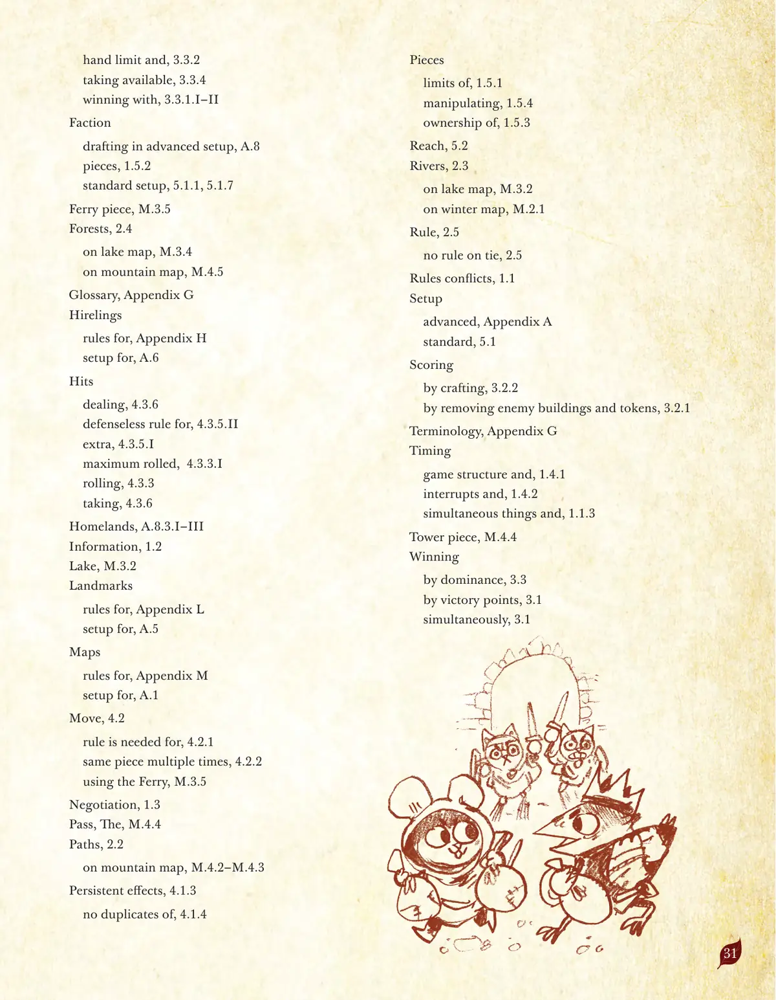
📝 第 31 页 AI 机翻对照（点击展开）
手牌上限和，3.3.2
获取可用牌，3.3.4
以此获胜，3.3.1.I–II
派系
高级设置中的选牌，A.8
棋子，1.5.2
标准设置，5.1.1，5.1.7
渡船棋子，M.3.5
森林，2.4
在湖泊地图上，M.3.4
在山地地图上，M.4.5
术语表，附录G
雇佣兵
规则，附录H
设置，A.6
打击
处理，4.3.6
无防御规则，4.3.5.II
额外打击，4.3.5.I
最大投掷打击数，4.3.3.I
投掷打击，4.3.3
承受打击，4.3.6
家园，A.8.3.I–III
信息，1.2
湖泊，M.3.2
地标
规则，附录L
设置，A.5
地图
规则，附录M
设置，A.1
移动，4.2
需要规则，4.2.1
同一棋子多次移动，4.2.2
使用渡船，M.3.5
谈判，1.3
关口，M.4.4
路径，2.2
在山地地图上，M.4.2–M.4.3
持续效果，4.1.3
无重复效果，4.1.4
棋子
限制，1.5.1
操控，1.5.4
所有权，1.5.3
范围，5.2
河流，2.3
在湖泊地图上，M.3.2
在冬季地图上，M.2.1
规则，2.5
平局无规则，2.5
规则冲突，1.1
设置
高级设置，附录A
标准设置，5.1
计分
通过制造，3.2.2
通过移除敌方建筑和指示物，3.2.1
术语，附录G
时机
游戏结构和时机，1.4.1
中断和时机，1.4.2
同时发生的事情和时机，1.1.3
塔楼棋子，M.4.4
获胜
通过优势，3.3
通过胜利点，3.1
同时获胜，3.1
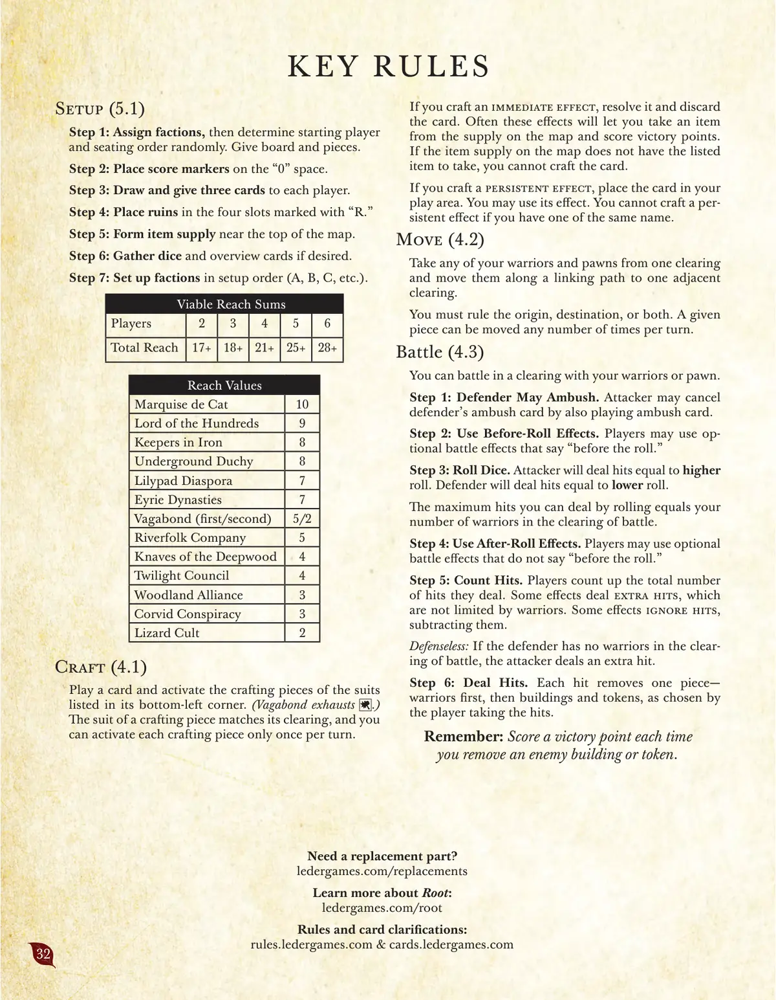
📝 第 32 页 AI 机翻对照（点击展开）
如果你制作一个即时效果，请结算它并弃掉这张卡牌。这些效果通常会允许你从地图上的供应区中获取一个物品并获得胜利点。
如果地图上的物品供应区没有列出的可获取物品，你就无法制作这张卡牌。
如果你制作一个持续效果，请将卡牌放置在你的游戏区域。你可以使用它的效果。如果你已经有一张同名卡牌，就不能制作持续效果。
移动 (4.2)
将你的任意战士和棋子从一个空地沿着连接路径移动到一个相邻的空地。
你必须控制起始地、目的地或两地。每个棋子每回合可以移动任意次数。
战斗 (4.3)
你可以用你的战士或棋子在空地进行战斗。
第1步：防御方可以伏击。攻击方可以通过打出伏击卡来取消防御方的伏击卡。
第2步：使用投骰前效果。玩家可以使用标有"投骰前"的可选战斗效果。
第3步：投掷骰子。攻击方将造成等于较高点数的打击，防御方将造成等于较低点数的打击。
通过投掷骰子能造成的最大打击数等于你在战斗空地中的战士数量。
第4步：使用投骰后效果。玩家可以使用不标有"投骰前"的可选战斗效果。
第5步：计算打击数。玩家计算他们造成的打击总数。一些效果会造成额外打击，这些打击不受战士数量限制。一些效果会忽略打击，将其减去。
无防御：如果防御方在战斗空地中没有战士，攻击方会额外造成一次打击。
第6步：结算打击。每次打击移除一个棋子——优先移除战士，然后是建筑和指示物，由承受打击的玩家选择。
记住：每次移除敌方建筑或指示物时获得一个胜利点。
需要替换零件？
ledergames.com/replacements
了解更多关于《Root》：
ledergames.com/root
规则和卡牌说明：
rules.ledergames.com & cards.ledergames.com
关键规则
设置 (5.1)
第1步：随机分配派系，然后确定起始玩家和座位顺序。分发版图和棋子。
第2步：将记分标记放在"0"格上。
第3步：抽牌并给每位玩家发三张卡牌。
第4步：将废墟放置在标有"R"的四个槽位中。
第5步：在地图顶部附近形成物品供应区。
第6步：根据需要收集骰子和概览卡。
第7步：按照设置顺序（A、B、C等）设置派系。
有效总和值
玩家
总势力值
17+
18+
21+
25+
28+
势力值
Marquise de Cat（猫侯爵）
Lord of the Hundreds（百领主）
Keepers in Iron（钢铁守卫者）
Underground Duchy（地下公国）
Lilypad Diaspora（睡莲流亡者）
Eyrie Dynasties（鹰王朝）
Vagabond（流浪者，第一/第二）
5/2
Riverfolk Company（河民公司）
Knaves of the Deepwood（深林匪徒）
Twilight Council（暮光议会）
Woodland Alliance（林地联盟）
Corvid Conspiracy（鸦鸟阴谋）
Lizard Cult（蜥蜴教团）
制作 (4.1)
打出一张牌并激活其左下角列出的花色的工艺部件。(流浪者耗尽H。)
工艺部件的花色与其对应的空地相匹配，并且你每个回合只能激活每个工艺部件一次。